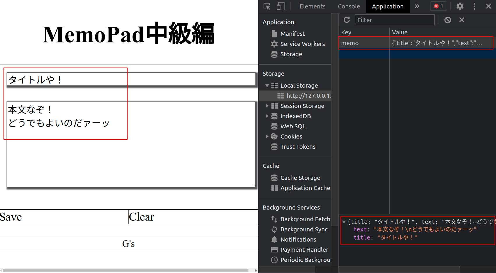
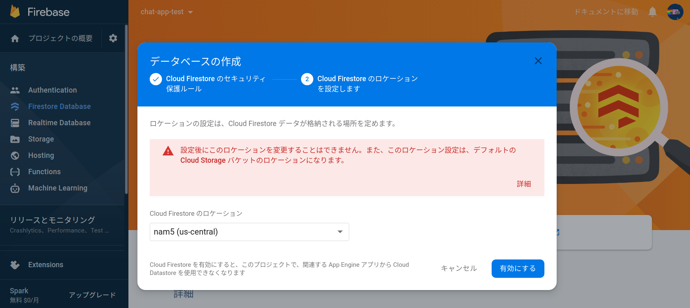
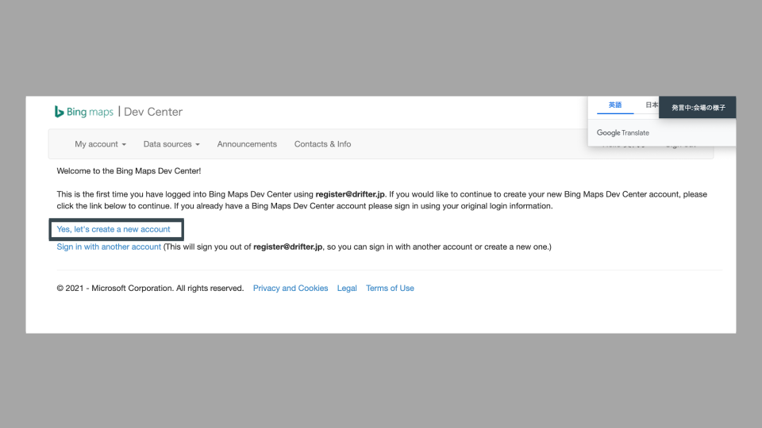
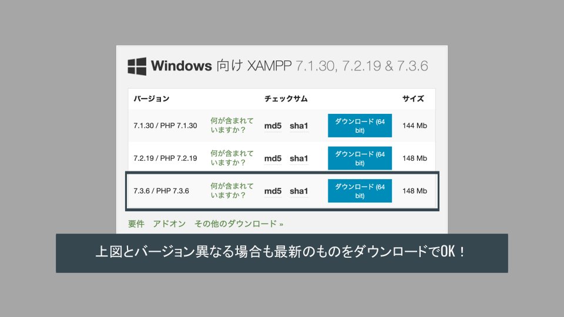
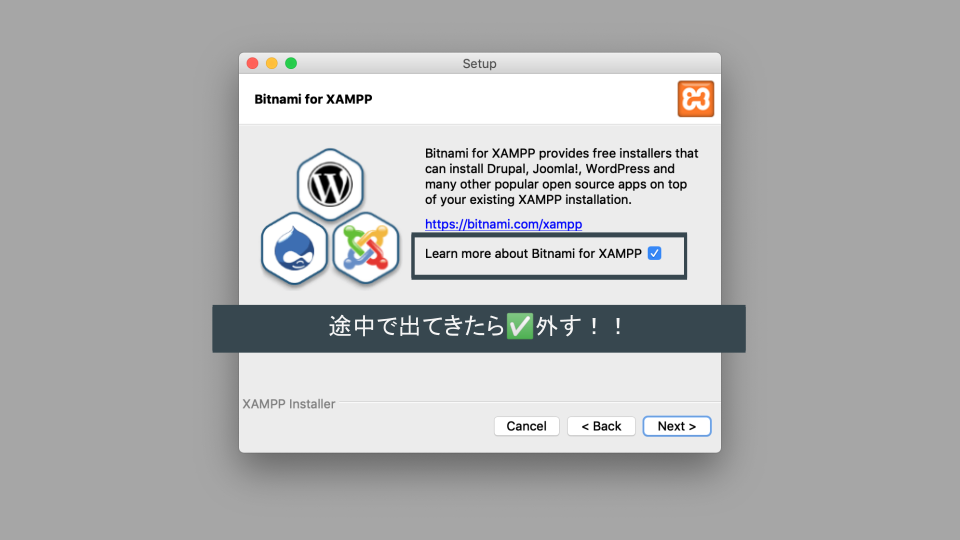
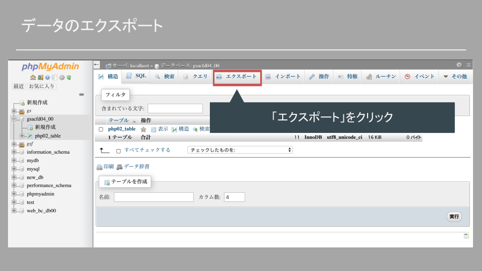
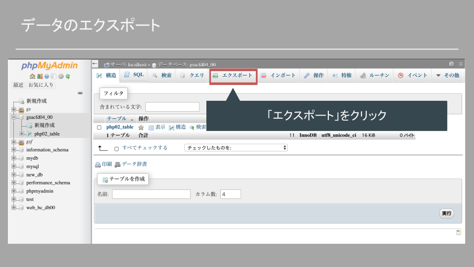
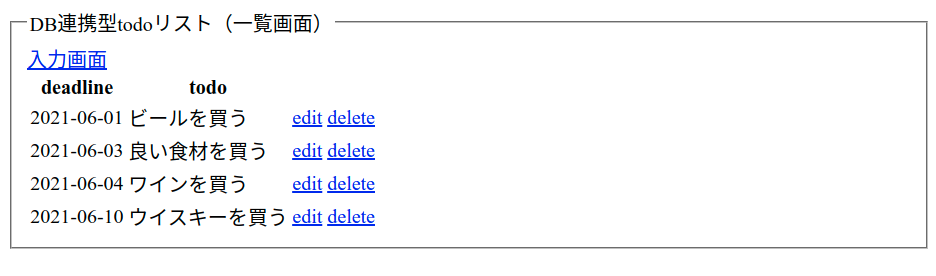

講義資料ノート
サンプルコードはこちら
受講時の注意
時間もお金も投資しているのだからむしり取れるだけむしり取れッ！
講義中に意識するポイント
ただ受けているだけだと資料の内容しかものにできずもったいない！
まず下記は絶対厳守！！！
- うまくいかないときに黙っている「サイレント詰み」は犯罪！
- まずはわからなくても「動くもの」をつくれ！
- 食糧飲料燃料の補給は各自のペースで！（自分にとって最適な状況を用意しろッ！）
いつでもコードを書けるように！
- 授業中は常にエディタを起動！
- 資料も常に開いておこう！
講義中はまず動くものをつくれ！
- 講義では一緒に1つのアプリケーションをつくる．
- わからなくてもとにかく「動かす」．
- 課題に挑戦すると大抵うまくいかない．そのときに「講義でつくった動くもの」と「自分でつくった動かないもの」を比較して何がマズイのか探るんだッ！
聴くときは聴き，書くときは書く！
- 初めて挑戦することなので，わからなくなって当然．．！
- まずはしっかり説明を聴こう！
- 聴くときは聴くこと，手を動かすときは手を動かすことに集中！！
クラスのメンバーでお互いに刺激し合おう！
- 考えたことや感じたことはslackの「ガヤチャンネル」でガンガン発信！
- くだらないことでもOK！！意見を言うやつは偉い！！
- 誰かのコメントに乗っかろう！
疑問を共有しよう！
- 質問はまずslackへ！
- 慣れないうちは「詰んだ」の一言から．詰みを表明することが大切！
- 慣れたら「エラーのスクショ」や「書いたコード」を貼ろう！
- 他の人の質問にも目を通そう！（同じ質問があるかも）
進捗を共有しよう！
- 演習時，できた人はスクショなどslackに貼ってアウトプット！
- できたら「できた」コメント！
- 詰んだら「詰んだ」コメント！
- みなさんのコメントを見ながら講義を進めていきます！
詰みを脱するTips
- まずは打ち間違いを疑おう！
()[]{}'";など
- 書いたら保存しよう！（よく忘れる！）
- Mac:
command + s - Windows:
ctrl + s
- Mac:
- 他の人に見てもらおう！
- 自分の打ち間違いは10分探しても見つからないが，他人の打ち間違いは2秒で見つかる．
- 「隣の人」「slack + スクショ」「zoomのブレイクアウト」を活用するのだッ！
コードに向き合いやすくなる考え方
彼を知り己を知らば百戦危うからず．
質問を制すものはコードを制す！
わからなかったり動かなかったりのときは遠慮なく質問せよ！
下記を記述するとお互いに幸せになれる確率が高まるッ！
- やりたいことは何か
- どういう状態（動き）になればゴールなのか
- どうやったか（考え方や書いたコードなど）
- どうなったか（エラーメッセージやスクショなど）
- 調べたときのググりワード，参考にしたサイトのURL
勿論最初から全部はできないので，まずは遠慮なく投稿するのが大事！
（足りない部分は講師チューターの方々が拾ってくれる）
言語化が大事！
- 「言語化」とは自分のやりたいことやうまくいかない現状を他の人に説明すること．
- 言語化は「できると良い」ではなく「できなければコードが書けない」のである．講師チューターは超能力者ではないので，みなさんが説明しなければ何をしたいのかわからないのだッ．．！
- コードを書くにも「JavaScriptで何を書けばよいのか」「どうなればOKなのか」を自ら決めて明確にすることが第一歩．
- 無理矢理にでも言葉にしたら誰かにぶつけよう．誰かと議論することでより解像度が高まる．最初は「ちょっと何いってるかわからない」と言われるが，やらないと言語化のスキルは高まらない．沈黙は死．
正解を求める思考を捨てよ！
- 「唯一の正解は存在しない」
- 提示されたヒントでは動かないこともあるし，それとは異なる方法でうまくいくこともある．
- 一つのやり方に固執することは地獄への一本道を進むことに似たり．
- 「効率のよいやり方」など一旦動かしてから改めて考えれば良い．力技だろうがまずは動けば良かろうなのだァァッ！！
「コードは量」という勝ちパターン！
- 一発でうまくいくことはほぼない．特にはじめの頃は経験値が少なく「運ゲー」度が高いので，何度もやり直してうまく行くパターンを引かなければならない．
- 運ゲーをものにするには試行回数が必要で，そのためには時間が必要になる．敵の行動パターンを集めながら会心の一撃が出るまで粘れ！
- わからなければ講義内容を10周くらいすれば何か見えてくるはず．わからないと嘆く時間があるならコードを書こう．レベルが足りないなら雑魚敵を狩って経験値を稼ごう．
課題にチャレンジするコツ
課題を制すものは全てを制す．
自分でネタを決めよ！
- 誰かに言われたものをつくっても面白くない．．．
- 自分で「何をつくりあげるのか」を決断してチャレンジすることが大切！
- 「自分で決めたことをやり遂げる」のが最高にCoolッ！
つくりたいものをつくれ！
- 「役に立つ」「ウケそう」ではない．．．
- 「自分がほしい物」「おもしろいと思うもの」にチャレンジすることで身が入る！
- 「誰かに褒められる感覚」よりも「全力でやりきった感覚」ッ！
まず見た目より動きをつくれ！
- プロダクトには「機能」「見た目」どちらも大事！
- 見た目を作り込むことでより「完成度の高いプロダクト」になる．
- しかしまずは「機能」や「動き」をつくる．「見た目」はその後ッ！
- 見た目を先につくると，機能を変更したときに作り直しになる．．．
技術自体を楽しめ！
- 技術は「アイデアを実現するためのツール」．
- しかし技術をより深く知ることで「できることのイメージが広がる」！
- 「好きな技術」「やってて楽しい技術」を見つけよう！まずは技術にのめり込もう！
JavaScript
JavaScriptの役割
| 言語 | 役割 |
|---|---|
| HTML（マスター済み） | コンテンツの指定 タイトル，文章，画像などの記述 |
| CSS（マスター済み） | コンテンツの装飾 色，大きさ，配置などの指定 |
| JavaScript | ユーザー操作，イベント発生による動きを実現 （わりとなんでもできる） |
JavaScriptとは
JavaScript ≠ JAVA
JavaScriptとJAVAの違い
| JavaScript | JAVA |
|---|---|
| フロントエンド言語 | サーバサイド言語 |
| カモミール | カモ |
| オーストラリア | オーストリア |
| ハムスター | ハム |
| メロンパン | メロン |
Webアプリケーションに欠かせないJavaScript

言語別人気ランキング（2020年）
| 言語 | 使用している開発者（%） |
|---|---|
| JavaScript | ||||||||||||||||||||||||||||||||||||||||||||||||||||||||||||||||||||||69.7% |
| HTML/CSS | ||||||||||||||||||||||||||||||||||||||||||||||||||||||||||||||62.4% |
| SQL | |||||||||||||||||||||||||||||||||||||||||||||||||||||||||56.9% |
| Python | ||||||||||||||||||||||||||||||||||||||||||41.6% |
| JAVA | ||||||||||||||||||||||||||||||||||||||38.4% |
| C# | ||||||||||||||||||||||||||||||||32.3% |
| TypeScript | ||||||||||||||||||||||||||||28.3% |
| PHP | ||||||||||||||||||||||||||25.8% |
JavaScript周辺の技術

よく使われる技術
| 技術 | 特徴 |
|---|---|
| - JavaScriptのライブラリ． - ユーザ操作イベントやアニメーションを実現 - ✅ 生JSと比較して短くかける． - ✅ webアプリケーションで広く普及している． - ✅ 導入が簡単． - ✅ 学習コストが低い． - 🔼 難しいことをやろうとすると複雑になる． - まずはここから！ | |
| - JavaScriptのライブラリ． - ✅ モダンなwebアプリケーション（SPA）を実現 - ✅ 高速！ - ✅ TypeScriptでの実装も可能 - ✅ スマホアプリも見据えた開発が可能． - 🔼 学習コスト - 🔼 環境構築がややハードル． - （私はReactが好き） | |
| - サーバサイドでJavaScriptを動かす技術． - ✅ フロントもサーバもJavaScriptで書ける．．！ - ✅ サーバサイドの中では環境構築が容易 - 🔼 難しいことをやろうとすると複雑になる． |
JavaScriptを書く
書き方
<script></script>の間に処理を記述！
書く場所
- htmlファイルの
</body>のすぐ上に書こう！ - ほかにもいくつか書ける場所があります．
- 別にファイルを作るやり方もあります．
まず動かす！！
alert()console.log()
文字列は「
'」か「"」で囲む．どちらでもOK！
<script>
alert('Hello world');
console.log('Hello world');
</script>
JS_おみくじ
本講義の内容とゴール
本講義の内容
- JavaScriptを動かす！
- 変数と条件分岐の練習と実装．
- おみくじアプリケーションの実装．
本講義のゴール
- プログラミングに慣れる！
- 「変数」「条件分岐」を扱う！
- 課題に取り組み始める！
JavaScript
JavaScriptの役割
| 言語 | 役割 |
|---|---|
| HTML（マスター済み） | コンテンツの指定 タイトル，文章，画像などの記述 |
| CSS（マスター済み） | コンテンツの装飾 色，大きさ，配置などの指定 |
| JavaScript | ユーザー操作，イベント発生による動きを実現 （わりとなんでもできる） |
JavaScriptとは
JavaScript ≠ JAVA
JavaScriptとJAVAの違い
| JavaScript | JAVA |
|---|---|
| フロントエンド言語 | サーバサイド言語 |
| カモミール | カモ |
| オーストラリア | オーストリア |
| ハムスター | ハム |
| メロンパン | メロン |
Webアプリケーションに欠かせないJavaScript
言語別人気ランキング（2020年）
| 言語 | 使用している開発者（%） |
|---|---|
| JavaScript | ||||||||||||||||||||||||||||||||||||||||||||||||||||||||||||||||||||||69.7% |
| HTML/CSS | ||||||||||||||||||||||||||||||||||||||||||||||||||||||||||||||62.4% |
| SQL | |||||||||||||||||||||||||||||||||||||||||||||||||||||||||56.9% |
| Python | ||||||||||||||||||||||||||||||||||||||||||41.6% |
| JAVA | ||||||||||||||||||||||||||||||||||||||38.4% |
| C# | ||||||||||||||||||||||||||||||||32.3% |
| TypeScript | ||||||||||||||||||||||||||||28.3% |
| PHP | ||||||||||||||||||||||||||25.8% |
JavaScript周辺の技術
よく使われる技術
| 技術 | 特徴 |
|---|---|
| - JavaScriptのライブラリ． - ユーザ操作イベントやアニメーションを実現 - ✅ 生JSと比較して短くかける． - ✅ webアプリケーションで広く普及している． - ✅ 導入が簡単． - ✅ 学習コストが低い． - 🔼 難しいことをやろうとすると複雑になる． - まずはここから！ | |
| - JavaScriptのライブラリ． - ✅ モダンなwebアプリケーション（SPA）を実現 - ✅ 高速！ - ✅ TypeScriptでの実装も可能 - ✅ スマホアプリも見据えた開発が可能． - 🔼 学習コスト - 🔼 環境構築がややハードル． - （私はReactが好き） | |
| - サーバサイドでJavaScriptを動かす技術． - ✅ フロントもサーバもJavaScriptで書ける．．！ - ✅ サーバサイドの中では環境構築が容易 - 🔼 難しいことをやろうとすると複雑になる． |
JavaScriptを書く
書き方
<script></script>の間に処理を記述！
書く場所
- htmlファイルの
</body>のすぐ上に書こう！ - ほかにもいくつか書ける場所があります．
- 別にファイルを作るやり方もあります．
まず動かす！！
alert()console.log()
文字列は「
'」か「"」で囲む．どちらでもOK！
<script>
alert('Hello world');
console.log('Hello world');
</script>
変数と計算
変数とは
「変数」は文字列や数値に名前をつけて，後から使用できるようにするもの．
プログラミングでは，ある部分で計算などして導出した値を別の部分で使用することが多い．
その際，毎回同じ計算を行うと不便であるため，1回計算した結果に名前をつけておき別の部分でそのまま使えるようにする．
💡 Key Point
変数には自分で名前をつけるが，「何の値なのか」がわかるように名前をつけることが極めて重要！！
変数のルール
プログラミングで使用する値には「数値」「文字列」などの型が存在する．
- 「数値」は数学で扱う数と同様に計算できる．
- 「文字列」は開発者が決めたメッセージやキーワードなどである．英語でも日本語でも扱うことができ，
'（シングルクォーテーション）か"（ダブルクオーテーション）で囲む必要がある． - 変数名の先頭が数字になるパターンはNG！
const number1 = 100;
const number2 = 200;
const text1 = 'hello';
const text2 = 'world';
const 3text = 'JavaScript'; // NG
💡 Key Point
シングルクォーテーションとダブルクオーテーションはどちらでも良いが統一しよう！
数値の計算
数値は数学と同様に四則演算を行うことができる．
const number1 = 1 + 9; // 10
const number2 = 1 - 5; // -4
const number3 = 2 * 4; // 8
const number4 = 10 / 2; // 5
const number5 = 10 % 3; // 1
文字列の結合
文字列は「+」の計算を行うことができる．この場合は数学と異なり，前後の文字列が連結される．
const number1 = 100;
const number2 = 200;
const text1 = 'hello';
const text2 = 'world';
const sum1 = number1 + number2; // 300
const sum2 = text1 + text2; // helloworld
💡 Key Point
1と'1'は異なるッ！
NGワード
変数名には使用できない単語が存在する
構文で使用するもの，将来的に使われるもの，など
- 「
if」「for」など
このような単語は「予約語」と呼ばれる．
- 「MDN javascript 予約語」で検索！！
- 引っかかる場合は少ないので今は気にしなくてOK！
練習
以下の処理をJavaScriptで実装しよう！
- 「
100」と「200」の数値をそれぞれ変数に入れ，加算した結果をalert()で表示． - 「
G's」と「ACADEMY」の文字列をそれぞれ変数に入れ，つなげてalert()で表示． js_practice.htmlに記述しよう！
動作確認
それぞれ「300」と「G'sACADEMY」が表示されればOK！
補足
JavaScriptにおける変数の定義には「
const」「let」「var」の3種類が存在する．基本的には
constを使用し，どうしてもな場合にletを使用すれば良いだろう．const hoge = 100; const hoge = 200; // エラー（同じ名前で定義するのはNG） hoge = 300; // エラー（異なる値を入れ直すのはNG） // 後から上書きできる変数 let fuga = 1000; let fuga = 2000; // エラー（同じ名前で定義するのはNG） foo = 3000; // OK（予期せぬ値が入ってしまう場合があるので注意） // むかしあったやつ（使わないほうが良い） var piyo = 99999; var piyo = 88888; // OK（あぶない） piyo = 77777; // OK（あぶない）
ランダムな数（乱数）をつくる
乱数とは
毎回異なる値が出てくる数のこと（例：1回目に実行したら1，2回目に実行したら4，など）．
JavaScriptには最初から乱数をつくれる処理が用意されている（Math.random()）のでこれを利用する．しかし，この処理は0から1の範囲で小数を発生させるため，Math.floor()を用いて整数に直す．
// 0から1の間でランダムな値（乱数）を表示．
const randomNumber1 = Math.random();
alert(randomNumber1);
// 0から4までのどれかが表示される！
const randomNumber2 = Math.floor(Math.random() * 5);
alert(randomNumber2);
💡 Key Point
乱数の処理は毎回これでいけるので，覚えるよりコピペ！
補足
JavaScriptのMath.~には多くの種類があり，絶対値を求めたり四捨五入したりする処理も存在する．
練習
math.htmlで以下の数をランダムに発生させてalert();で表示させよう！
| 最小値 | 最大値 | |
|---|---|---|
| 問題1 | 0 | 9 |
| 問題2 | 1 | 9 |
| 問題3 | 5 | 10 |
| 問題4 | 50 | 99 |
条件分岐
条件分岐
条件を満たすときと満たさないときで別々の処理を実行する！
if(`条件式`){
// 条件式を満たす場合の処理
} else {
// 条件式を満たさない場合の処理
}
複数の条件で処理を分岐させることもできる！
if(`条件式1`){
// 条件式1を満たす場合の処理
} else if(`条件式2`) {
// 条件式1と満たさなくて条件式2を満たす場合の処理
} else {
// いずれの条件も満たさない場合の処理
}
条件式
条件式は左辺と右辺の比較で行うことが多い（比較演算子）．
| 演算子 | 意味 | 補足 |
|---|---|---|
== | 左辺と右辺が等しい | 1と'1'は等しいと判定される． |
=== | 左辺と右辺が等しい | 1と'1'は等しくないと判定される． |
!= | 左辺と右辺が等しくない | 1と'1'は等しいと判定される． |
!== | 左辺と右辺が等しくない | 1と'1'は等しくないと判定される． |
> | 左辺が右辺より大きい | |
< | 左辺が右辺より小さい | |
>= | 左辺が右辺以上 | |
<= | 左辺が右辺以下 |
💡 Key Point
左辺と右辺が等しい場合に
a = bのように記述してハマる．a == bが正解．
条件式の組み合わせ
条件式は複数組み合わせることができる．下記2種類がよく使われる．
- 複数の条件式を全て満たす場合（AND条件）は条件式を
&&でつなぐ． - 複数の条件式のいずれかを満たす場合（OR条件）は条件式を
||でつなぐ．
if(`条件式1` && `条件式2`){
// 条件式1と条件式2を両方満たす場合の処理
} else {
// 片方しか満たさない，両方満たさない場合の処理
}
if(`条件式1` || `条件式2`){
// 条件式1か条件式2のどちらかを満たす場合の処理
} else {
// 両方満たさない場合の処理
}
💡 Key Point
条件分岐を書くときははじめに構文（
if(){}else{}）をつくってから条件や処理を書く！
練習
乱数と条件分岐を組み合わせておみくじを実装！
ランダムに「大吉・中吉・小吉・凶・大凶」をalert()で表示！
omikuji01.htmlに記述しよう！
ヒント！！
Math.rondom()で0から4を発生させる．（<- 前項でつくったものが使える．．！）- 出た数値に応じて
if文を使って条件分岐し，異なる内容をalert()で出力！
毎回ランダムで「大吉・中吉・小吉・凶・大凶」のどれかが表示されればOK！
おみくじのWebアプリ実装
おみくじの処理自体はできたが，画面から操作できるWebアプリケーションにしたい！
想定される挙動
- 画面上のHTML要素（DOM）をクリックして処理を実行！
- 要素を「指定」する！
- classやidでDOMを特定する．
- 指定したDOMに対してJavaScriptで操作を行う！
例
- 「
idがbutton」の要素を「クリック」したら．．． - 「大吉-大凶のどれかをランダムに表示」！
参考（DOM）
HTMLに記述されている各要素のこと（document object model）
基本の3要素
- selector（どこを）
- event（いつ）
- method（どうする）

なんだけど．．．
＿人人人人人人人人人人人人人人＿
＞ JavaScriptはDOM操作が苦手 ＜
￣Y^Y^Y^Y^Y^Y^Y^Y^Y^Y^Y^Y^Y^Y^￣
jQueryライブラリ
jQueryとは
- セレクタをcssと同じ要領で指定できる．
- 素のJavaScriptよりも短く書ける！
- アニメーションなど手軽に設定できる．
- 書き方（順序や考え方）はJavaScriptと同様！
- 導入が簡単（フレームワークなどは環境構築で詰む）
【参考】https://webkikaku.co.jp/homepage/blog/hpseisaku/webdesign/jquery_start/
💡 Key Point
jQueryはJavaScriptのDOM操作を短縮して書けるライブラリ
補足
ライブラリは他の開発者がつくったコードを利用させてもらうイメージ．手間のかかる処理を一発で書けるように実装してくれている．
ライブラリ読み込み
（jQueryに限らず）ライブラリはソースコードの読み込みが必要！！
（読み込みのコードは毎回同じなのでコピペでOK！）
<!-- 🔽 ここで読み込み 🔽 -->
<script src="https://ajax.googleapis.com/ajax/libs/jquery/3.6.0/jquery.min.js"></script>
<script>
// 自分で書いた処理
</script>
💡 Key Point
ライブラリを使用する場合は「自分で書くJavaScriptより上の行で」読み込むこと．ライブラリで決められた関数を実行しようとして，読み込みが終わっていない状態だとエラーになってしまう．
jQueryの書き方と動き方
基本の考え方はJavaScriptと全く同じッ！
コード例
idがbuttonの要素を- クリックしたときに
- アラートを出す
$('#button').on('click', function () {
alert('Hello World!');
});
コード内でそれぞれ以下の場所で指定している．
$(`セレクタ名`).on(`イベント名`, function () {
`実行したい処理（メソッド）`
});
今回はidで指定しているが，セレクタの指定方法はたくさんある．イベントもたくさんある．
- 「
jQuery セレクタ」でググる！ - 「
jQuery イベント」でググる！
まずは形の入力に慣れよう！
いろいろな処理を書く前に，形の入力に慣れることが大事！！（慣れないとしょうもないスペルミスで時間溶かす）
$('#id').on('click', function () {
// ...
});
喋りながら書くと定着する（本当）
だらーあいでぃーおんくりっくふぁんくしょんかっこかっこなみかっこえんたー...
練習
おみくじアプリケーションを完成させよう！
仕様
- 「おみくじを引くボタン」をクリックしたら以下のどれかを画面に表示！
- 「大吉・中吉・小吉・凶・大凶」
ヒント
下記の流れで考えよう！
- ボタンをクリックしたらなにかする．
- ランダムな数値を発生させる．
- 条件分岐をつくって，対応する「大吉，中吉，...」を画面に表示させる．
$('#button').on('click', function () {
// 0から4でランダムな数を作成
// 0だったら大吉，1だったら中吉．．．
// 結果をidで指定した場所に表示
});
課題
じゃんけんアプリを実装！！！！！
じゃんけんアプリの仕様
- 「グー」「チョキ」「パー」のボタンを設置
- どれかをクリックしたら「コンピュータの出した手は？」を変更
- 「コンピュータ：グー」「コンピュータ：チョキ」など
- 「結果は？」の箇所に
- 「あなたの負け」「あなたの勝ち」「あいこ」のどれかを表示！
※上記を最低ラインとして製作
※これを土台にしてガンガン発展させよう！！
課題に対する考え方
| ✅ | ❎ |
|---|---|
| オリジナリティを表現する | 誰かに言われたものを作る |
| プロダクトを創る | プログラムを書く |
| 自分が好きなものをつくる | 受けが良さそうなものをつくる |
JS_メモパッド
本講義の内容とゴール
本講義の内容
- 配列や繰り返し処理に触れる．
- ブラウザにデータを保存する．
- 複数件のデータをまとめる処理を実装する．
本講義のゴール
- いろいろなデータ形式を知る！
- データの扱いになれる！
- データを保存・読み出しをマスターする！
配列
配列（array）とは
- 複数の値に順番をつけてまとめて扱う方法．奥が深い．超強い．
- 順番を「インデックス」と呼ぶ．「0」からスタート！
- プログラミングでは「数字は0から始める」（稀に例外もあり）
const array = ['大吉', '中吉', '小吉', '凶', '大凶'];
alert(array[0]);
配列の作り方
下記のどちらかで作成可能．どちらでも良い（1が多い）．
[]で囲い，要素をカンマで区切る．new Array()の()内に要素をカンマ区切りで入れる．
const list01 = ['月', '火', '水', '木', '金', '土', '日'];
const list02 = new Array('月', '火', '水', '木', '金', '土', '日");
console.log(list01);
💡 Key Point
配列はブラウザの検証画面に出力すると構造や内容が確認しやすい．
配列の長さ
配列の要素数を「長さ」と呼ぶ．長さは配列名.lengthで取得することができる．
繰り返し処理などで非常に有用である（後述）．
console.log(list01.length); // 7
配列のいいぞ．．．
条件分岐なんていらんかったんや．．．
const hands = ['グー', 'チョキ', 'パー'];
const randomNumber = Math.floor(Math.random() * hands.length);
const computerHand = hands[randomNumber];
console.log(computerHand);
結果のテーブルをつくるのもありやな．．．
const resultTable = [
['draw', 'win', 'lose'],
['lose', 'draw', 'win'],
['win', 'lose', 'draw'],
];
const userHand = 0;
const computerHand = 1;
const result = resultTable[userHand][computerHand];
console.log(result);
よくある配列の処理
配列には値を追加したり削除したりできる．
const list01 = [1, 2, 3, 4, 5, 6, 7, 8, 9, 10];
// 先頭に追加
list01.unshift(0); // [0, 1, 2, 3, 4, 5, 6, 7, 8, 9, 10]
// 末尾に追加
list01.push(11); // [0, 1, 2, 3, 4, 5, 6, 7, 8, 9, 10, 11]
// 先頭を削除
list01.shift(); // [1, 2, 3, 4, 5, 6, 7, 8, 9, 10, 11]
// 末尾を削除
list01.pop(); // [1, 2, 3, 4, 5, 6, 7, 8, 9, 10]
// 反転
list01.reverse(); // [10, 9, 8, 7, 6, 5, 4, 3, 2, 1]
繰り返し処理
繰り返し処理とは
同じ処理を指定した回数実行するやり方
- 同じ処理を100回実行したいときに100回書くのか．．？
- 配列と相性が良い！
- 超むずい（使っていてもきちんと説明できないことも．．．）
書き方
繰り返し処理では次の3つの条件を指定する．
- 開始条件
- 繰り返しを続ける条件
- 回数のカウントの仕方
for(`開始条件`; `繰り返しを続ける条件`; `回数のカウントの仕方`){
// 実際に繰り返したい処理
}
💡 Key Point
if文と同じく，まず構文の形をつくってしまおう．
コード例
- 「
i」の値を使って繰り返しをコントロールする． - 条件をセミコロン「
;」で区切る点に注意！！ i++は「iを1ずつ増やす」を意味する．- 「
i=0で{}内を実行」「i=1で{}内を実行」...の繰り返し．
for(let i=0; i < 100; i++){
console.log(i);
}
上のコードは以下と同じ意味．「i < 100」なので99まで実行したら終了．
console.log(0);
console.log(1);
console.log(2);
// ...
console.log(98);
console.log(99);
繰り返しの使用例
1901年から2021年を選択できる<select>を作成する．処理の流れは以下．
- 開始年と終了年を定義しておく．
- 出力用の空文字を用意しておく．
- 繰り返し処理で「開始条件に開始年」「終了条件に終了年」を指定してタグを作成し，空文字に追加する．
- 繰り返し処理が終わったら指定した場所に出力する．
// 1
const start = 1901;
const end = 2021;
// 2
let option = '';
// 3
for(let i = start; i <= end; i++){
option += '<option>' + i + '</option>';
}
// 4
$('#hoge').html(option);
繰り返し処理との組み合わせ
繰り返し処理を用いると配列内の要素を順番に使うことができる．lengthを使用すると配列の長さに関わらず対応できる．
const list01 = ['月', '火', '水', '木', '金', '土', '日'];
for(let i = 0; i < list01.length; i++){
console.log(list01[i]);
}
配列と繰り返しでブラウザに要素を表示
よく出てくるパターン．データが入った配列からデータを取り出して画面に表示したい場面は多い．
流れは以下のとおり．
- 空の出力用配列を用意しておく．
- 繰り返し処理を用いて，配列からデータを取り出し，タグに入れて1の配列に追加する．
- 繰り返し処理が終わったら出力用の配列を画面上の指定した部分に出力する．
const list01 = ['月', '火', '水', '木', '金', '土', '日'];
// 1
const array = [];
// 2
for(let i = 0; i < list01.length; i++){
array.push('<p>' + list01[i] + '</p>');
}
// 3
$('#echo').html(array);
繰り返し処理のバリエーション
似たような構文がいくつか存在する．とりあえず好きなものを使用すればOK．
const list = [1, 2, 3, 4, 5];
for (let i = 0; i < list.length; i++) {
console.log(list[i]);
}
for (let x of list) {
console.log(x);
}
list.forEach(function (x) {
console.log(x);
})
オブジェクト
オブジェクトとは
- 配列と同様に複数の値を管理する方法
- 配列の「インデックス」に対して「キー」「バリュー」で管理．
const jojo01 = {
number: 1,
title: 'ファントムブラッド',
hero: 'ジョナサン・ジョースター',
rival: 'ディオ・ブランドー',
sound: 'メメタァ',
};
console.log(jojo01.sound);
console.log(jojo01['sound']);
配列とオブジェクトの組み合わせ
この形は非常に多い．今後もたくさん出てくるので慣れておくことを推奨するッ！！
const jojo = [
{
number: 1,
title: 'ファントムブラッド',
hero: 'ジョナサン・ジョースター',
},
{
number: 2,
title: '戦闘潮流',
hero: 'ジョセフ・ジョースター',
},
{
number: 3,
title: 'スターダストクルセイダース',
hero: '空条承太郎',
},
];
console.log(jojo[0].title); // ファントムブラッド
console.log(jojo[2].hero); // 空条承太郎
練習
配列の練習
list/array.html
オブジェクトの練習
list/object.html
上記が楽勝な人
list/challenge.html
LocalStorage（メモ帳初級）
LocalStorageとは
変数やオブジェクトの問題
- ブラウザをリロードすると初期化される．
- 次回読み込んだときまで値を保存したいときにつらい！
LocalStorageができること
- ブラウザにデータを保存できる！
- テキスト形式のデータのみ．
- 「オリジン単位」ごとに5MBまで保存できる．
- （自分で削除しないと永続的に保存される）
オリジン単位とは「http://www.example.com:80」のような「プロトコル://ドメイン名:ポート番号」のこと．
参考: https://gihyo.jp/dev/serial/01/javascript-security/0004?page=2
本日実装するアプリケーション
メモ帳をつくろう！
- ブラウザ上のテキストエリアにメモを入力．
- ブラウザに情報を保存．
- リロードしても情報が保存されるようにする．
仕様
- saveボタンをクリックしたら情報を保存．
- clearボタンをクリックしたら情報を削除．
- リロード時に情報が保存されていれば自動的に表示．
完成イメージ
LocalStorageの内容は検証画面から確認できる．
「Application」 -> 「LocalStorage」の順にクリックすると確認できる（下図の赤枠部分）．

LocalStorageの使い方
しくみ
「key」と「value」の形式でデータを保存する．key名を変えれば複数保存できるッ！
| key | value |
|---|---|
| memo01 | コード！書かずにはいられないッ！ |
| memo02 | 最終的に．．．動けばよかろうなのだァァァァッ！！ |
| memo03 | 過程や！方法なぞ！どうでもよいのだァーッ |
JavaScriptでの扱い方
今回はデータの登録（すでに同じkeyが存在する場合は上書き）とデータの取得を扱う．
| 内容 | JavaScriptの書き方 |
|---|---|
| データ登録 | localStorage.setItem(key, value); |
| データ取得 | localStorage.getItem(key); |
| データ更新 | localStorage.setItem(key, value); |
| データ削除 | localStorage.removeItem(key); |
| データ全削除 | localStorage.clear(); |
| データの長さ | localStorage.length; |
| データの順番 | localStorage.key(インデックス); |
メモ帳に必要な処理
1. データを保存するときの処理
- saveボタンのクリックでイベント発火．
- テキストエリアの情報を取得．
- LocalStorageに情報を保存．
2. データを削除するときの処理
- clearボタンクリックでイベント発火．
- LocalStorageの情報を消去．
- 画面上の入力欄をクリア．
3. データを取得するときの処理
- 読み込み時にLocalStorageのデータ有無を確認．
- 保存されていれば情報を取得．
- テキストエリアに情報を表示．
データを保存するときの処理
- saveボタンのクリックでイベント発火．
.val()でテキストエリアの情報を取得．localStorage.setItem()でLocalStorageに情報を保存．
// memo01.html
$('#save').on('click', function () {
const text = $('#text_area').val();
localStorage.setItem('memo', text);
});
💡 Key Point
「localStorage」は手打ちせず補完に頼る！！
データを削除するときの処理
- clearボタンクリックでイベント発火．
- key名を指定してLocalStorageの情報を消去．
- 画面上の入力欄をクリア（空文字で上書きする）．
// memo01.html
$('#clear').on('click', function () {
localStorage.removeItem('memo');
$('#text_area').val('');
});
「
.val()」は()内に何か入れると入れた値で上書きする！
データを取得するときの処理
- 読み込み時に条件分岐を用いてLocalStorageのデータ有無を確認．
- 保存されていれば情報を取得．
- テキストエリアに情報を表示．
// memo01.html
if (localStorage.getItem('memo')) {
const text = localStorage.getItem('memo');
$('#text_area').val(text);
}
データがないのに処理しようとするとエラーになってしまう．データがないときは何もしない．
練習
memo01.htmlに以下の処理を順番に実装しよう．
- saveボタンクリック時にデータの保存
- clearボタンクリック時にデータの消去
- 読み込み時にデータの取得
LocalStorageの中身は検証画面から確認しよう．それぞれ以下の状態になればOK！
- 保存時にデータが保存され，検証画面から確認できる．
- 消去時に保存してあるデータが消去される．
- リロード時に保存しているデータがあれば画面に表示される．
JSONデータ（メモ帳中級）
メモ帳初級の問題点
データが1件しか保存できない．複数のメモを個別に残しておきたいときに困る．
複数件のデータを管理する
配列かオブジェクトを使えば複数件のデータをまとめることができる．これを用いればメモ欄が複数になっても管理できそうである．
だめです
配列やオブジェクトは言語毎に形式が異なるため互換性がない（JavaScriptの配列はJavaScriptでしか扱えない）．
つまり，LocalStorageも配列やオブジェクトを保存することはできない．

互換性のあるデータであるJSON形式
Webアプリケーションは複数の言語で構成されていることが多い．このような場合にお互いのデータをやり取りするため，互換性のある「JSON形式」が準備されている．
各言語では「自前の配列やオブジェクト」と「JSON形式のデータ」を相互に変換する処理が準備されている．

メモ帳中級編のイメージ
タイトルと本文をまとめて保存できるようにする！

JSONの扱い方
JavaScriptには（他の言語でも）「配列やオブジェクトをJSONに変換する処理」と「JSONを配列やオブジェクトに戻す処理」が用意されている．
配列やオブジェクトをJSONに変換する処理
JSON.stringify()でJSON形式に変換できる．
const data = {
title: '波紋の使い方',
text: 'メメタァ'
};
const jsonData = JSON.stringify(data);
localStorage.setItem('memo', jsonData);
JSONを配列やオブジェクトに戻す処理
JSON.parse()でJSON形式から戻すことができる．
const jsonData = localStorage.getItem('memo');
const data = JSON.parse(jsonData);
console.log(data)
練習
タイトルと本文の両方を保存できるメモ帳を実装しよう．
- 動き方はメモ帳初級編と同様
- saveボタンクリック時に
- タイトルと本文の値を取得してまとめる．
- まとめたデータをJSON形式に変換する．
- JSON形式のデータをLocalStorageに保存．
- clearボタンクリック時にデータを消去
- 読み込み時に
- LocalStorageからJSON形式のデータを取得する．
- JSON形式のデータをオブジェクトに戻す．
- オブジェクトからデータを取り出して画面に表示する．
課題
LocalStorageを使った何かを作ろう
- タブで複数記述できるメモ帳
- じゃんけんのスコア保存
- ゲームのセーブ&ロード機能
- 保存したデータをグラフ表示
大事なのは「データを保存できる」「データを読み出せる」の2点！
これを用いて何ができるか考えるのだッ！！
JS_Firebase
事前準備
今回はGoogleのアカウントを使用します！
無料で取得できますので，事前に作成しておいてください！
- すでにお持ちの方は既存のアカウントでOKです！
本講義の内容とゴール
本講義の内容
- 関数を定義し，動かす一連の動作を実装する．
- オンライン上のデータベースにデータを保存する．
- オンライン上のデータを取得し，画面上にリアルタイムに表示する．
本講義のゴール
- 関数を使って処理を実装できるようになる！
- オンライン&リアルタイムでデータ共有する！
- 複雑なデータを扱う場合にどう考えるかを把握する！
関数
関数（function）とは
- 関数とは記述した処理をまとめて名前をつけて使い回せるようにしたもの．
- 一度処理を定義してしまえば，呼び出すだけで実行可能！
例
- 関数には「定義」と「実行」が必要．
- 関数には必ず名前をつける．
{}内に実行してほしい処理を記述する．- 「実行」したいときは名前を呼び出す．
// 関数の定義
function test(){
console.log('関数は便利！');
}
// 関数の実行
test();
引数と戻り値
関数は「なにかを入力して」「処理した結果を出力する」動きが基本となる．
引数
引数とは「関数に入力する値」である．
- 定義した関数に対して，処理に必要な値を入力する．
- 引数の数は一つでも複数でもOK！
戻り値
戻り値とは「関数から出力されてくる値」である．
- 関数の中で計算などを実行した後，結果を返す処理．
- 関数内の変数，配列，オブジェクトなどで返せる．
例
aとbの2つの数を入力し，「加算した結果」を出力する関数を考える．
この場合，aとbが「引数」でtotalが戻り値となる．
// 関数の定義
function add(a, b){
const total = a + b;
return total;
}
// 関数の実行
const sum = add(10, 20);
console.log(sum); // 30
数学の関数と同じ
プログラミングの関数は理解が難しいものの一つであるが，数学の関数と同じイメージを持つと理解しやすい．
数学の関数
数学の関数は「何かの数値を入力」すると「決まった計算を実行した結果を出力」するものである．
例えば，f(x) = x^2 + 2x + 1と関数を定義すると．．．
f(2) = 9,f(5) = 36,f(10) = 121
となる．この場合，入力値・関数・出力値をまとめると以下のようになる．
| 入力値 | 関数 | 出力値 |
|---|---|---|
| 2 | f(x) = x^2 + 2x + 1 | 9 |
| 5 | f(x) = x^2 + 2x + 1 | 36 |
| 10 | f(x) = x^2 + 2x + 1 | 121 |
プログラミングの関数
上記の例をJavaScriptで書くと以下のようになる．
function calculate(x) {
const result = x * x + 2 * x + 1;
return result;
}
calculate(2); // 9
calculate(5); // 36
calculate(10); // 121
この場合も「記述の仕方が異なるだけでやっていることは同じ」である．
| 入力値 | 関数 | 出力値 |
|---|---|---|
| 2 | calculate(x) | 9 |
| 5 | calculate(x) | 36 |
| 10 | calculate(x) | 121 |
💡 Key Point
引数と戻り値がない場合もある（ややこしいポイント）
言語にはじめから用意されている関数
これまでに使用した乱数関連も関数であるが，これらはJavaScriptがはじめから用意している関数である．
このような関数を「ビルドイン関数」と呼ぶ．
対して，開発者が自ら定義した関数を「ユーザ定義関数」と呼ぶ．
| 引数 | 関数 | 戻り値 |
|---|---|---|
| なし | Math.random(); | 0.534714863872 |
| 3.1415926535 | Math.floor(3.1415926535); | 3 |
Math.random(); // 0.534714863872
// 引数： なし
// 戻り値： 0.534714863872
Math.floor(3.1415926535); // 3
// 引数： 3.1415926535
// 戻り値： 3
【参考】関数の記述方法
JavaScriptにおける関数の定義は以下の3種類を用いることができる．どの方法で記述しても実行方法は同じ．
（現段階では）どれでも同様と考えてOK．
function add1(a, b){
return a + b;
}
const add2 = function(a, b){
return a + b;
}
const add3 = (a, b) => {
return a + b;
}
// 全部同じという理解でOK！
const result1 = add1(10, 20);
const result2 = add2(10, 20);
const result3 = add3(10, 20);
関数の利用
関数の利点
イベントごとに毎回同じ処理を書くのは面倒！
関数を定義しておけば，ボタン押したら実行するだけ！
例
押したボタンに応じて，異なる範囲の乱数を発生させたい！
// 関数の定義
function generateRandomNumber(min, max){
const rand = Math.floor(Math.random() * (max - min + 1) + min);
return rand;
}
// 実行するときはこんな感じ
const result = generateRandomNumber(1, 9);
console.log(result);
ボタンクリックイベントと組み合わせ
ボタンによって異なる範囲の乱数を発生させることもできる．
$('#btn01').on('click', function () {
const result = generateRandomNumber(1, 10);
$('#echo').text(result);
});
$('#btn02').on('click', function () {
const result = generateRandomNumber(10, 20);
$('#echo').text(result);
});
$('#btn03').on('click', function () {
const result = generateRandomNumber(20, 100);
$('#echo').text(result);
});
【参考】janken.htmlに関数を使用したじゃんけんの例もあります！
練習
- 最小値と最大値を入力してランダムな数を返す関数を定義しよう！
- 各ボタンのクリック時に関数を実行し，結果を
#echoに出力しよう！
リアルタイムチャットの実装
今回実装するアプリケーション
LocalStorageを利用したメモ帳アプリケーションでは，データを「ブラウザ」自体に保存する処理を実装した．
今回は更に発展させ，オンライン上にデータを保存する処理を実装し，リアルタイムに表示が更新されるチャットアプリケーションを実装する．

このような動きを実装するために，Googleが提供する「Firebase」を活用する．
Firebase（Cloud Firestore）とは
Firebaseは、クライアントからアクセス可能なデータベースとしてFirebase Realtime Database( 以下 Realtime Database)とCloud Firestoreの2つを用意しています．
Realtime Databaseは，リアルタイムでクライアント全体の状態を同期させる必要があるモバイルアプリ向けの効率的で低レイテンシなものです．
Realtime Databaseはクラウド上でホスティングされるNoSQLのデータベースです．データはすべてのクライアントにわたってリアルタイムに同期され、アプリがオフラインになっても利用可能です．クロスプラットフォームアプリを構築した場合でも，すべてのクライアン トが1つのRealtime Databaseを共有して，最新のデータへの更新を自動的に行います．またクライアントからも直接アクセスが可能なため自前のサーバなしで使えるデータベースとしても活用できます．
Cloud Firestoreは，直感的な新しいデータモデルで，Realtime Databaseの性能をさらに向上しており，Realtime Databaseよりも豊かで高速なクエリとスケールを備えています．Cloud Firestoreは2017年のGoogle I/Oで発表されたプロダクトであり，2018年5月現在はベータ版リリースです．
引用：WEB+DB PRESS vol.105 第4章（※2019年2月より正式版として運用されています．）
つまり．．？
- サーバ上にデータを保存できる！
- 保存したデータをリアルタイムに同期できる！
- 異なるデバイスでもデータを共有可能！
- PCとスマホでリアルタイムにデータを同期できる．
- JavaScriptのみで実装可能！
- Swift, Go, Pythonなど他の言語でも使用可！
| データの保存場所 | データを使用できる範囲 | |
|---|---|---|
| LocalStorage | ブラウザ | 自分のPC（ブラウザ） |
| Firebase | オンライン上のサーバ | 同じアプリケーションを動かしている端末全て |
Firebaseを活用するにはアカウントやプロジェクトの準備が必要になるため，次項から進める．
Firebaseの準備1（プロジェクトの作成）
まずはFirebaseの「プロジェクト」を作成する．
Firebaseでは「プロジェクト」単位で管理を行う．
管理画面へのアクセス
下記URLにアクセスしよう．
- アクセスしたら右上の「ログイン」からログインする．
- すでにログイン済みの場合は「コンソールへ移動」をクリックする．
プロジェクトの作成
下記画面から「プロジェクトの作成」をクリックする．

プロジェクトの名前を入力する．何のアプリケーションなのかわかるように名前をつけると良い．
同意するに✅を入れて「続行」をクリックする．

アナリティクスは使用しないので外す．外さないとエラーが出ることがあるので外すこと．

「プロジェクトを作成」をクリックして少し待つとプロジェクトが作成される．「続行」をクリックすると画面が切り替わる．
Firebaseの準備2（ソースコードの準備）
プロジェクトとJavaScriptの連携
画面の下記部分をクリックする．

ニックネームを入力するよう促されるので適当に入力する（プロジェクト名と同じが良い？）．
「Firebase Hosting」の✅は入れないこと．「アプリを登録」をクリックすると次の画面に切り替わる．
コードが表示されるので全てコピーする．
chatapp.htmlにコピーしたコードを貼り付ける．このコードがFirebaseのプロジェクトとソースコードでやり取りをするために必要になる．
貼り付けた<script>タグの中身を修正する．
修正前
<script src="https://www.gstatic.com/firebasejs/8.6.7/firebase-app.js"></script>
修正後
<script src="https://www.gstatic.com/firebasejs/8.6.7/firebase.js"></script>
エディタ上で下記のような状態になっていればOK！
<!-- chatapp.html -->
<!-- ここにFirebaseのコードを貼り付けよう -->
<!-- The core Firebase JS SDK is always required and must be listed first -->
<script src="https://www.gstatic.com/firebasejs/8.6.7/firebase.js"></script>
<!-- TODO: Add SDKs for Firebase products that you want to use
https://firebase.google.com/docs/web/setup#available-libraries -->
<script>
// Your web app's Firebase configuration
var firebaseConfig = {
apiKey: "AIzaSyBPm676fTHNHq2_hogehoge_wryyyyyy",
authDomain: "chat-app-test-4e1e4.firebaseapp.com",
projectId: "chat-app-test-4e1e4",
storageBucket: "chat-app-test-4e1e4.appspot.com",
messagingSenderId: "929064315016",
appId: "1:929064315016:web:79dd676be9a71b1803173d"
};
// Initialize Firebase
firebase.initializeApp(firebaseConfig);
</script>
コードを貼り付けたらブラウザ画面の「コンソールに進む」ボタンをクリックする．
Firebaseの準備3（データベースの準備）
データベースの準備
データを実際に保存するためのデータベースを準備する．
コンソール画面から「構築」 -> 「Firestore Database」 -> 「データベースを作成」の順にクリック．

ルールは必ず「テストモードで開始」を選択して「次へ」をクリック．

ロケーションは適当でOK．「有効にする」をクリックすると次の画面に移動する．

コレクションの作成
データを保存する際には「コレクション」と「ドキュメント」という単位で管理する．
これらは「フォルダ」と「ファイル」の関係によく似ている．
| データの容器 | データの単位 | |
|---|---|---|
| PC | フォルダ | ファイル |
| Firestore | コレクション | ドキュメント |
Firestoreの機能を利用するには「コレクション」を作成してテストデータを入力しておく．下記画面の「コレクションを開始」をクリックする．

コレクションIDに「chat」を入力し「次へ」をクリックする．

テスト用のドキュメントを作成する．ドキュメントの構成はメッセージを送信したユーザ名のname，メッセージの本文であるtext，送信日時を表すtimeの3項目とする．
下記の手順でドキュメントを作成しよう．
- ドキュメントIDは「自動ID」をクリック．
- フィールドには「
name」「text」「time」の3項目を設定． nameとtextにはString，timeにはtimestamp形式を選択する．- 各フィールドには適当な値を入力しておく．
設定したら「保存」をクリックする．
下記のようにデータが保存されていればデータベースの準備は完了！

チャット画面の実装とデータの送信
チャット画面の実装
nameとtextの入力欄を作成する．
送信時にidを指定して入力した値を取得するため，<input>タグの2箇所と<button>にidを指定する．
<!-- chatapp.html -->
<form>
<fieldset>
<legend>チャット入力画面</legend>
<div>
name: <input type="text" id="name">
</div>
<div>
text: <input type="text" id="text">
</div>
<div>
<button type="button" id="send">send</button>
</div>
</fieldset>
</form>
下図のような画面となる．

データ送信の処理
続いて，上記の入力画面でnameとtextを入力して送信ボタンをクリックしたタイミングでFirestore上に新しいデータを作成する処理を実装する．
リアルタイム通信の準備
前項で作成したコレクションとやり取りをするため，下記のコードを追記する．追記場所は張り付けたFirebase関連のコード下くらいでOK．
💡 Key Point
このコードでは
chatコレクションの接続情報をdbに保存する．この1行を書いておくことでdbに対してデータの追加や取得ができるようになる．
// chatapp.html
const db = firebase.firestore().collection('chat');
送信ボタンクリック時にデータを送信
続いて，送信ボタンクリック時にデータを送信する処理を実装する．
まずはボタンのクリックイベントを作成．
// chatapp.html
$('#send').on('click', function () {
// 送信時に必要な処理
});
続いてクリックイベント内に「入力値を取得する処理」と「データを送信する処理」を記述する．
ポイントは，
- id指定して
.val()で入力値を取得する． - データを送信する際にはオブジェクト形式にする必要がある．
timeはFirestoreの独自形式となるため，Firestore側で用意されている関数を使用する．
// chatapp.html
const data = {
name: $('#name').val(),
text: $('#text').val(),
time: firebase.firestore.FieldValue.serverTimestamp(),
};
db.add(data);
$('#text').val('');
動作確認
コードを記述したらブラウザの画面からnameとtextを入力して．．．

Firebaseのコンソール画面でデータが保存されていればOK！

練習
下記の処理を実装し，Firestoreにデータを保存しよう！
- 入力画面の作成
- データの送信処理
データのリアルタイム取得と画面表示
保存されているデータの扱い
Firestoreではデータの取得方法はいくつか用意されているが，最大の特徴は「データベースの変更を検知して自動的にデータを取得できる」ことである．
（本来はサーバ側の言語での実装が必要であり，難易度も高い．WebSocketなどの実装が必要）
処理の流れ
流れは送信と比較して複雑となる．理由は以下のとおり．
- 動作のタイミングがつかみにくい．
- 取得したデータが非常に複雑な状態．
- 必要な3項目を取得するためにFirestore側で用意された関数を使用する必要がある．
データの取得
まずはFirestore上に保存されているデータを取得してconsoleに出力する．
- データに変更（追加，更新，削除など）が生じたタイミングで実行される
.onSnapshot()を使用する． .onSnapshot()はデータベース上でデータの変更が発生したタイミングで{}内の処理を実行する．- Firestore上に保存されているデータは
querySnapshot.docsに入っている．
// chatapp.html
db.onSnapshot(function (querySnapshot) {
console.log(querySnapshot.docs);
});
データの取り出し
上記querySnapshot.docsは非常に複雑な形となっており，このまま扱うことは難しい．
そのため，必要なデータのみ抽出した「オブジェクト形式の配列」に変換する．
- 空の配列を準備．
querySnapshot.docsに対して繰り返し処理を用いて各要素に対して，.idでドキュメントID（名前）を取得する．.data()でドキュメント中身（3項目）を取得する．
- 上記のデータのみを1で用意した配列に追加．
// chatapp.html
// 前項の`console.log()`下に記述
const dataArray = [];
querySnapshot.docs.forEach(function (doc) {
const data = {
id: doc.id,
data: doc.data(),
};
dataArray.push(data);
});
console.log(dataArray);
💡 Key Point
難しい形式のデータは変換して「自分が慣れている形式」に変換すると扱いやすい．
画面表示するためのタグ生成
必要な情報のみを抽出した配列が作成できたため，この配列から画面表示用のタグを作成する．
前項で作成したdataArrayを基にして，
- 空の配列を準備する．
dataArrayに繰り返しを用い，各要素をタグの形にする．- 繰り返し処理終了後に指定したid部分に出力する．
// chatapp.html
// 前項の`console.log()`下に記述
const tagArray = [];
dataArray.forEach(function (data) {
tagArray.push(`
<div id="${data.id}">
<p>${data.data.name} at ${data.data.time}</p>
<p>${data.data.text}</p>
</div>
`);
});
$('#output').html(tagArray);
動作確認
上記のコードを記述すると「Firestore上でデータが変更されたタイミング」で{}内の処理が実行され，最新のデータが画面に反映される．

また，「Firestore上でデータが変更されたタイミング」で動作するため，複数タブで片方だけ操作した状態でもう片方の動作を確認することができる．
練習
下記の順番でデータの表示を実装しよう．
- データ本体を取得．
- データから必要なものだけを抽出．
- 抽出したデータからタグを作成．
- タグを画面に表示．
入力フォームからデータを送信し，一覧に追加されればOK．
機能追加
データの取得と表示（データ送信と同時に画面更新）は実装ができたが，下記の問題点がある．
- 時刻がわかりにくい．
- 最新がどれなのかわかりにくい．
これらを解決するために以下の処理を実装していく．
時刻データの表示形式変更
JavaScriptにおいて時刻処理は非常に煩雑である．時刻関連の処理を実装するためにはライブラリを使用したほうが実装の負荷が少なくバグも少ない．
時刻変換関数
今回はサンプルコード内に時刻の形式を変換する関数（下記）を記述しておいたため，これを利用する．解説は省略．
// chatapp.html内に記述してある関数
function convertTimestampToDatetime(timestamp) {
const _d = timestamp ? new Date(timestamp * 1000) : new Date();
const Y = _d.getFullYear();
const m = (_d.getMonth() + 1).toString().padStart(2, '0');
const d = _d.getDate().toString().padStart(2, '0');
const H = _d.getHours().toString().padStart(2, '0');
const i = _d.getMinutes().toString().padStart(2, '0');
const s = _d.getSeconds().toString().padStart(2, '0');
return `${Y}/${m}/${d} ${H}:${i}:${s}`;
}
関数を利用
本関数を利用して，タグ生成部分の処理で時刻形式を変換する．
// chatapp.html
const tagArray = [];
dataArray.forEach(function (data) {
tagArray.push(`
<div id="${data.id}">
<p>${data.data.name} at ${convertTimestampToDatetime(data.data.time.seconds)}</p>
<p>${data.data.text}</p>
</div>
`);
});
動作確認
下記のように人間が認識しやすい形式になって表示される．

データの並び替え
本アプリケーションはチャット機能がメインであるため，送信日時が新しいメッセージが上部に表示されることが望ましい．
しかし，初期状態ではFirestore上のID名順でデータを取得しているため，timeでソートされた状態でデータを取得できるようにしたい．
- データのソートには
.orderBy()を利用する． .orderBy()には2つのデータを入力する．1つ目は「どの項目で並び替えをするか」2つ目は「昇順（asc）か降順（desc）」である．
データ取得時の処理に追記する．
// chatapp.html
db.orderBy('time', 'desc').onSnapshot(function (querySnapshot) {
// 省略
});
ブラウザで並び順が変更されているか確認しよう．
【おまけ】Enterキーで送信
ボタンクリックではなく，メッセージ入力時にEnterキーを押して送信することもできる．
この場合，イベント情報から「入力したキーを識別するキーコード」を抽出してキーを判別する．
function (e)のeにイベント情報（この場合keydown）で取得可能なデータが格納される．e.keyCodeでどのキーを押したかが識別可能であるため，Enterのキーコードを調べておけば条件分岐でデータ送信を行える．
// chatapp.html
$('#text').on('keydown', function (e) {
if (e.keyCode === 13) {
const data = {
name: $('#name').val(),
text: $('#text').val(),
time: firebase.firestore.FieldValue.serverTimestamp(),
};
db.add(data);
$('#text').val('');
}
});
このように，JavaScriptではイベントに関連した情報を取得することができる．これらを用いて画面の特定の部分をクリックしたときだけ発火させたり，決まった順にタイプしたときだけ発火させたりできる．
課題と提出時の注意点
Firebaseを使用したアプリを実装しよう！
Firebaseを用いることで複数の端末での双方向的なやり取りを実装することが可能となる．
今回はデータを追加していく方式で実装したが，データを削除したり上書きしたりすることも可能だ．
今回使用したFirestore以外にも様々な機能がある．本気出せばWebアプリケーションを全て実装してデプロイできるだけの可能性を秘めた技術であるッ！
- 認証（Authentication）
- ファイル保存（Storage）
- デプロイ（Hosting）
- サーバサイドの実装（Functions）
実装例
- スタンプ送信機能
- オンラインでじゃんけん
- 出席管理システム
- オリジナルSNS
- MMORPGを開発
⚠️ 注意点
APIキーの扱い
- FirebaseにはAPIキーが必要になります．
- 誰でも見られるGithubにあげてしまうとあまりよろしくない．
Githubにpushする前に．．．
git add .する前にAPIキー部分は一旦削除しておきましょう．- 提出フォームのコメント欄にAPIキーを記述してください！
<script>
// Your web app's Firebase configuration
var firebaseConfig = {
// 🔽この1行を`git add .`する前に一旦削除！削除したAPIキーは「提出フォームのAPIkey欄」に記述！
apiKey: "AIzaSyBPm676fTHNHq2_hogehoge_wryyyyyy",
authDomain: "chat-app-test-4e1e4.firebaseapp.com",
projectId: "chat-app-test-4e1e4",
storageBucket: "chat-app-test-4e1e4.appspot.com",
messagingSenderId: "929064315016",
appId: "1:929064315016:web:79dd676be9a71b1803173d"
};
// Initialize Firebase
firebase.initializeApp(firebaseConfig);
</script>
JS_API
事前準備
今回はマイクロソフトのアカウントを使用します！
無料で取得できますので，事前に作成しておいてください！
- 下記参考サイトの「既に持ってるメアドを使う場合」でアカウントを作りましょう．
- すでにお持ちの方は既存のアカウントでOKです！
- 不明点あればslackにコメントください！
https://kaoruya.org/blog/ms-account/#i-3
本講義の内容とゴール
本講義の内容
- Google Books APIを用いたリクエストとレスポンスを扱う．
- Bing Maps APIを用いて外部APIを用いた画面操作を行う．
- 自身のアイデアを元にAPIを探す．
本講義のゴール
- Webアプリケーションにおけるリクエストとレスポンスの概念を把握する．
- JavaScriptを用いたAPI連携処理を実装することで，処理の基本的な流れを理解する．
- 自分のアイデアから関連するAPIを探し，実装にチャレンジできるようになる．
APIとは
APIの意味合い
Application Programming Interfaceの略．
あるアプリケーション（例えばGoogle MapやTwitterなど）の一部を外部に向けて公開することにより，第三者が開発したソフトウェアに機能を組み込めるようにしたものである．
世の中に存在するサービスの機能の一部を使わせてもらえるイメージ！
Interface
- Interfaceは「あるもの」と「あるもの」をつなぐもの，という意味合い．
- 今回は（すでに動いている）アプリケーションと（開発者が実装する）プログラムをつなぐ．
APIの一例
| API名 | 概要 |
|---|---|
| Bing Maps API | リクエストに応じてブラウザに地図を表示したり，ルート検索したりする． |
| Google Books API | Google Booksが持っている書籍の情報から，キーワードなど指定してデータ- を返す． |
| Open Weather Map API | 都市名や緯度経度を指定して，その日の天気や天気予報の情報を返す． |
APIの利点
- 他社のデータを利用できる！
- 自分で作らなくて良いので開発速度がアップ！
- いろいろなAPIを組み合わせてアプリケーションを実装できる！
動き方のイメージ
基本は「リクエスト」と「レスポンス」！
API（外部のサーバ）にJavaScriptでリクエスト（要求）を送信し，API側にデータを返してもらったり処理を実行してもらったりする．
Webアプリケーションのサーバ側の処理をAPIに行ってもらうイメージ！

APIにリクエストを送信してデータをもらうタイプ（こちらが一般的）
検索条件などを指定して，条件に合う情報を送ってもらう．
| API | 送信するデータ | 受け取れるデータ |
|---|---|---|
| Google Books API | 本のタイトルに含まれるキーワード，著者，出版社，出版年，etc... | 条件に該当する本のデータ |
| Open Weather Map API | 都市名，緯度経度，etc | 現在の気象情報，一週間分の天気予報，etc... |
| テキスト解析 | テキストデータ | テキストの感情データ，要，約，etc... |
| 画像認識 | 画像データ | 画像に映っているもの名称，位置，etc... |
| 音声認識 | 音声データ | 音声を文字起こししたテキスト |
APIに定められたコードを実行してブラウザを操作してもらうタイプ
条件を指定して，実際にブラウザ表示などをやってもらう．
| API | やってもらえること |
|---|---|
| Bing Maps API | 場所などを指定して地図を表示，ルート検索，住所を緯度経度に変換，etc... |
| Google Maps API | 地図表示，ストリートビュー表示，etc... |
GoogleBooksAPI
Google Books APIとは
本APIに限らず，APIには必ずドキュメント（仕様書）が存在する．
ドキュメントには下記のような重要な情報が記載されているため，必ず目を通そう．
- APIにできること（得られるデータややってくれる処理など）．
- APIの使い方やサンプルコード．
- 料金（無料のものと有料のものが存在する）．
特徴
- Google Booksに登録されている本のjsonデータを取得できる！
- タイトルや著者などで条件を指定できる！
- （仕様をよく読みましょう！）
- API keyが不要！！！
API keyとは
- APIにリクエストを送るためにはユニークな文字列が必要．
- 設定を行ったアプリケーションのみ動作させるため．（無断で使用されないように．．！）
- この文字列をAPIキーを呼び，APIの種類問わず必須の場合が多い．
処理の流れ
- APIに定められたURLにリクエストを送信する．
- 送信の際には欲しいデータに必要な条件などを指定する．
HTTP通信の準備
APIへのリクエストには「HTTP通信」という方式で送信する．
JavaScriptでHTTP通信を行うには下記のような複数の方法が存在する．下のものほどオススメ．
| 方法 | 特徴 |
|---|---|
| XMLHttpRequest | 生JS / 一番昔から存在する |
| $.ajax() | jQuery / これが出てきて流行った |
| fetch | 生JS / 慣れないと分かりづらい |
| axios | ReactとかVueでも使われていて使い勝手が良い |
今回はaxiosライブラリを使用する．ライブラリであるため，下記のコードで読み込みが必要となる．
最近のモダンなフレームワーク（React, Vue.jsなど）でも利用されているため，今の時点から慣れておくのも良き．
<!-- booksapi.html -->
<script src="https://unpkg.com/axios/dist/axios.min.js"></script>
リクエストの送信とデータの受け取り
Google Books APIで指定された下記のURLにリクエストする．
https://www.googleapis.com/books/v1/volumes
リクエストの際には，得たいデータの条件などを指定する．
- 今回は「本のタイトルに
javascriptが含まれる」という条件を指定してみる． - 本条件を指定する場合は，上記URLの最後に「
?q=intitle:javascript」を追加する． - 条件の指定の仕方はドキュメントに記載されている．APIによって指定方法が異なるため，必ずドキュメントを確認しよう．
リクエストはaxios.get()関数で実行する．
// booksapi.html
const requestUrl = 'https://www.googleapis.com/books/v1/volumes?q=intitle:javascript';
axios.get(requestUrl)
.then(function (response) {
// リクエスト成功時の処理（responseに結果が入っている）
console.log(response);
}).catch(function (error) {
// リクエスト失敗時の処理（errorにエラー内容が入っている）
console.log(error);
}).finally(function () {
// 成功失敗に関わらず必ず実行
console.log('done!');
});
リクエストを送信するaxios.get()の動き方
axios.get()関数の.then()などは実行されるタイミングが下記のように決まっている．
| 記述 | 実行されるタイミング |
|---|---|
.then(function (response) {...}) | 情報の取得に成功した場合に{}内が実行される．取得した情報は responseに格納されている． |
.catch(function (error) {...} | 情報の取得に失敗した場合に{}内が実行される．エラーの詳細が errorに格納されている． |
.finally(function () {...} | 情報の取得成否にかかわらず{}内が実行される． |
処理の順番
したがって，リクエストの成否によって下記のどちらかの順番で処理が実行されることとなる．
- リクエスト成功の場合
.then(function (response) {...})の{}内に記述した処理．.finally(function () {...}の{}内に記述した処理．
- リクエスト失敗の場合
.catch(function (error) {...})の{}内に記述した処理．.finally(function () {...}の{}内に記述した処理．
💡 Key Point
重要なのはリクエストに成功した場合の処理である．
APIから取得したデータを使いたい場合は
.then(function (response) {...})の{}内に処理を記述しよう．
実行結果
上記のコードを実行すると，コンソールには以下のようなデータが表示される．
データ全体はオブジェクトとなっており，data.itemsに本のデータが配列形式でまとまっている．ブラウザの検証画面をみてデータ構造や本のタイトルがどこに含まれているのかなど確認しよう．
// 検証画面に表示される内容
{data: {…}, status: 200, statusText: "", headers: {…}, config: {…}, …}
config: {url: "https://www.googleapis.com/books/v1/volumes?q=intitle:javascript", method: "get", headers: {…}, transformRequest: Array(1), transformResponse: Array(1), …}
data:
items: Array(10)
0: {kind: "books#volume", id: "yg0fBAAAQBAJ", etag: "lfbwNFyvkDg", selfLink: "https://www.googleapis.com/books/v1/volumes/yg0fBAAAQBAJ", volumeInfo: {…}, …}
1: {kind: "books#volume", id: "sREfBAAAQBAJ", etag: "Bbo+KCTb+os", selfLink: "https://www.googleapis.com/books/v1/volumes/sREfBAAAQBAJ", volumeInfo: {…}, …}
2: {kind: "books#volume", id: "EgEfBAAAQBAJ", etag: "1Sqd8Kh1nDE", selfLink: "https://www.googleapis.com/books/v1/volumes/EgEfBAAAQBAJ", volumeInfo: {…}, …}
3: {kind: "books#volume", id: "oeFeDwAAQBAJ", etag: "VpC+UDGt4ak", selfLink: "https://www.googleapis.com/books/v1/volumes/oeFeDwAAQBAJ", volumeInfo: {…}, …}
4: {kind: "books#volume", id: "EQ0fBAAAQBAJ", etag: "IUx31Y7bo5w", selfLink: "https://www.googleapis.com/books/v1/volumes/EQ0fBAAAQBAJ", volumeInfo: {…}, …}
5: {kind: "books#volume", id: "sLiKBgAAQBAJ", etag: "W8AX5pJDoTw", selfLink: "https://www.googleapis.com/books/v1/volumes/sLiKBgAAQBAJ", volumeInfo: {…}, …}
6: {kind: "books#volume", id: "MMGlDwAAQBAJ", etag: "uasA3kSjFmg", selfLink: "https://www.googleapis.com/books/v1/volumes/MMGlDwAAQBAJ", volumeInfo: {…}, …}
7: {kind: "books#volume", id: "OH-ynAEACAAJ", etag: "BGSumK/B93U", selfLink: "https://www.googleapis.com/books/v1/volumes/OH-ynAEACAAJ", volumeInfo: {…}, …}
8: {kind: "books#volume", id: "0pfxN9xhwMIC", etag: "0m0saY33NmY", selfLink: "https://www.googleapis.com/books/v1/volumes/0pfxN9xhwMIC", volumeInfo: {…}, …}
9: {kind: "books#volume", id: "VI-EoAEACAAJ", etag: "SvupF5US57Q", selfLink: "https://www.googleapis.com/books/v1/volumes/VI-EoAEACAAJ", volumeInfo: {…}, …}
length: 10
kind: "books#volumes"
totalItems: 200
headers: {cache-control: "private", content-encoding: "gzip", content-length: "7804", content-type: "application/json; charset=UTF-8", date: "Sun, 06 Jun 2021 07:45:18 GMT", …}
request: XMLHttpRequest {readyState: 4, timeout: 0, withCredentials: false, upload: XMLHttpRequestUpload, onreadystatechange: ƒ, …}
status: 200
statusText: ""
練習
Google Books APIを使って下記を実行しよう！
- 検索の条件を自由に設定してURLを作成しよう！
- 本の情報をconsole.log()で出力しよう！
- 本のタイトルをブラウザ上に一覧表示してみよう！
- （タイトルにリンクを張る，本の画像を表示，などもチャレンジ）
位置情報の活用
位置情報とその使われ方
近年位置情報の活用幅や重要性は増しており，サービスの8割程度で利用されているとも言われている．
GPSなどを用いた位置情報
- 位置情報とマップの組み合わせ
- 今まではユーザの現在地がわからなかった．
- ユーザの現在位置を視覚的に表示できるため，どこに行けばよいかがわかる．
- 地図上に店舗データなどを表示できる．
- 道を間違っても自動的に現在地からのルートが分かる
Wifiを用いた位置情報
- 店舗のマーケティングリサーチ
- 電波強度で顧客を分類する．
- 強ければ店内，弱ければ店外．
- 接続時間で顧客を分類する．
- 時間が長ければ店内，短ければ店外．
- 営業時間内なら顧客，時間外は通行人．
ビーコンを用いた位置情報
- 店内の販促ツール．
- 棚の近くにビーコンを設置．
- ユーザが近づくとLINEにクーポンを配信．
- ユーザにアプリ等のツールが必要ない．
- 購入レシートを送信するとポイントが当たる．
- 再度の来店を促す．
JavScriptでの位置情報取得
JavaScriptには標準で位置情報を取得する関数が組み込まれている．
種類
下記2種類の方法で位置情報を取得することができる．
| 方法 | 概要 |
|---|---|
| getCurrentPosition | 処理を実行したタイミングで一度だけ位置情報を取得する． |
| watchPosition | 処理を実行すると，位置情報を常に取得し続ける． バッテリー消費に注意！ |
オプション
また，上記の処理を実行する際には3種類のオプションを設定することができる．
オプションはオブジェクト形式で設定し，上記処理を実行する際に読み込むことで適用される．
| オプション名 | 内容や設定のしかた |
|---|---|
| enableHighAccuracy | 対応端末でGPSを使用するかどうかの設定．trueまたはfalseで指定． |
| maximumAge | 指定時間以内であれば前回取得した位置情報の値を用いる． ミリ秒で指定． |
| timeout | タイムアウト時間を設定する． ミリ秒で指定． |
処理の流れとコード
位置情報を取得する処理を記述する場合には，下記の3項目が必要となるため，予め用意しておく必要がある．
- 位置情報の取得に成功した場合に実行される関数（サンプルでは
showPosition）． - 位置情報の取得に失敗した場合に実行される関数（サンプルでは
showError）． - 位置情報の取得に必要なオプション（前項で紹介したもの，サンプルでは
option）．
⚠️ 上記3項目は下記コード（位置情報取得の処理）よりも上に書いておく必要がある．
位置情報取得の処理
// geolocation.html
navigator.geolocation.getCurrentPosition(showPosition, showError, option);
位置情報の取得に成功した場合に実行される関数
位置情報の取得に成功すると，自動的に関数の引数（下記ではposition）に位置情報が入ってくる．
まずはconsoleに出力して内容を確認しよう．
// geolocation.html
function showPosition (position) {
console.log(position);
const lat = position.coords.latitude;
const lng = position.coords.longitude;
console.log(lat, lng);
};
位置情報の取得に失敗した場合に実行される関数
位置情報の取得に失敗した場合は決まったエラーが返される．
エラーには番号（1, 2, 3）が振ってあり意味が決まっているため，それぞれに対応したメッセージを表示するように記述してある．
// geolocation.html
function showError (error) {
const errorMessages = [
'位置情報が許可されてません',
'現在位置を特定できません',
'位置情報を取得する前にタイムアウトになりました',
];
alert(`error:${errorMessages[error.code - 1]}`);
}
位置情報の取得に必要なオプション
オブジェクトの形式で3項目を指定する．
// geolocation.html
const option = {
enableHighAccuracy: true,
maximumAge: 20000,
timeout: 1000000,
};
動作確認
コードが実行されると「位置情報の取得を許可するかどうか」のダイアログが表示されるため，許可する．
位置情報が取得できると，コンソール画面には以下のような情報が表示される．
位置情報は緯度経度で表現され，それぞれlatitudeとlongitudeの値が対応する．
GeolocationPosition {coords: GeolocationCoordinates, timestamp: 1622956582259}
coords: GeolocationCoordinates
accuracy: 200
altitude: null
altitudeAccuracy: null
heading: null
latitude: 35.69
longitude: 139.69
speed: null
timestamp: 1622956582259
練習
下記の処理を実装しよう！
- 読み込み時に位置情報を取得してconsole.log()に表示しよう！
- できる人は取得した緯度と経度をブラウザに表示しよう！
（位置情報の取得までに時間がかかることもあるので気長に待つ！）
BingMapsAPI/準備
Bing Maps APIとは
Microsoftが提供する地図APIである．位置情報との連携を中心に様々な機能を提供する．
今回は前項で取得した位置情報を利用し，現在地付近の地図をブラウザ上に表示するアプリケーションを実装する．
特徴
- JavaScriptのみで実装可能．
- 機能を実現するために必要なコードはMicrosoftが定めている．決められたコードを記述するだけで様々な機能を実装可能．
- 支払い情報など登録する必要なく無料で使用可能．
機能例
- 任意の地点・縮尺で地図の表示．
- 出発地，到着地を指定したルート検索．
- 地図上の任意の地点にピン，Infobox（吹き出し），などを設置．
- 住所から緯度経度を取得．
- 緯度経度から住所を取得．
準備
Bing Maps APIを使用するためにはいくつかの準備が必要となる．主な手順は以下のとおり．
- Microsoftアカウントが必要（事前準備済）．
- Bing Maps API開発者アカウントの準備．
- API keyの発行．
- （実際にコードを記述する）
開発者アカウントの準備
まずは下記のURLにアクセス！
https://www.bingmapsportal.com
下記の画面から「Sign In」ボタンをクリック．

Microsoftアカウントでログインする．

画面が切り替わるので「Yes, let's create a new account」をクリックし，アカウント情報を入力する．
メールアドレスはMicrosoftアカウントと同じものを使用すると管理しやすいだろう．

API keyの発行
アカウントが作成できたら，画面上部のタブの「My account」 -> 「My Keys」をクリックする．

アプリケーション名を入力し，API keyを作成する．アプリケーション名以外は初期状態のままで構わない．
アプリケーション名は「何のアプリケーションなのか」がわかる名前にしよう．

作成が正常に完了すると自動的に画面が切り替わる．下図の「Show key」部分をクリックするとAPI keyが表示される．
API keyは後ほどコード内に記述する必要があるため，この画面は開いたままにしておくとスムーズである．

BingMapsAPI/実践
API keyの準備が完了したら，実際にJavaScriptを書いてMapを表示してみよう．
処理の流れ
位置情報の取得とAPI処理を組み合わせるため，実行される順番がやや複雑になる．コメントなどで順番がわかるようにしておくと自力で実装する際の助けとなるだろう．
- APIを使用するためのコード読み込み．
- 位置情報取得に成功した場合の関数，失敗した場合の関数，オプションを記述．
- 位置情報の取得（前項での処理と同様）
- 位置情報が取得できた場合は，id指定したHTML要素に現在地を中心としたマップを表示する（位置情報の取得に成功した場合に実行される関数内に記述する）．
コードの読み込み
Microsoftが提供するコードを読み込む．ここに自分のAPI keyを入力しておく．
<!-- geo_and_map.html -->
<script src='https://www.bing.com/api/maps/mapcontrol?mkt=ja-jp&key=API_KEY'></script>
<script>
// JSの処理
</script>
位置情報取得に成功した場合の関数，失敗した場合の関数，オプションを記述．
この3項目自体は前項の位置情報取得で使用したものと同様の記述をすればOK．
今回はそれぞれ以下のような内容．
- 位置情報の取得に成功した場合に実行される関数（本項では
mapsInit）． - 位置情報の取得に失敗した場合に実行される関数（前項と全く同じ）．
- 位置情報の取得に必要なオプション（前項と全く同じ）．
その他，マップの情報を格納するための変数（map）を定義しておく（これがないと動かないので注意！）．
必要な関数を準備
// geo_and_map.html
// マップ情報格納用の変数
let map;
// 省略
const option = {...};
// 省略
function showError(error) {...};
// この後マップ表示の処理を書き込む
function mapsInit() {...};
マップ表示処理の追加
マップの表示処理はMicrosoft側で決められているため，ドキュメントに従ってコードを記述すればOK．
流れとしては下記のとおり．
- 位置情報から緯度経度を抽出する．
- 1で取得した緯度経度を中心にしてマップを表示する．
マップを表示する際には下記の情報が必要となる．
- マップを表示したい要素のid名（
#map）． - 表示するマップの中心座標（緯度経度，
centerのオブジェクト）． - 表示するマップの縮尺（
1から20で指定）．
// geo_and_map.html
function mapsInit(position) {
const lat = position.coords.latitude;
const lng = position.coords.longitude;
map = new Microsoft.Maps.Map('#map', {
center: {
latitude: lat, longitude: lng
},
zoom: 15,
});
};
位置情報取得処理
最後に，実際に位置情報を取得する処理を記述する．
コード自体は前項と同様だが，実行のタイミングに注意する必要がある．理由は以下．
- マップ表示のためにはMicrosoftが提供したコードを読み込む必要がある．
- 読み込みが完了する前にマップ表示の処理を実行しようとするとエラーになる．
- そのため，読み込みが完了した後に「位置情報取得 -> マップ表示」の処理が実行されるように記述しなければならない．
この場合，window.onload = function () {...}を用いることで，全てのスクリプトが読み込ま出てから{}内が実行されるように記述できる．
// geo_and_map.html
window.onload = function () {
navigator.geolocation.getCurrentPosition(mapsInit, showError, option);
};
💡 Key Point
API（特に外部のコードを読み込む場合）は読み込み -> 実行の順番が重要になる場合が多い．
実行結果
正常に位置情報が取得でき，マップ表示処理が実行されると，以下のようにブラウザ上にマップが表示される．
実行場所やネットワーク環境によって場所は変化するため，実際の場所とあっていなくても気にしなくてOK．

練習
下記の処理を実装しよう！
- 位置情報の取得に成功したときに関数を定義し，map表示の処理を記述．
- 位置情報を取得する処理を記述し，画面にマップが表示されることを確認！
【おまけ】BingMapsAPI/機能追加
マップが表示されたら，マップ上にピンなどのオブジェクトを配置してみよう．
ピンの生成
現在地をわかりやすくするピンを設定できる．
処理の流れ
- 「ピンを立てる関数」を定義する．
- ピンの色などのオプションを指定する．
- 表示したいマップを指定する．
- 前項で実装したマップ表示後に「ピンを立てる関数」を実行する．
ピンを立てる関数の定義
マップ表示と同様にMicrosoftが処理を用意しているため，ドキュメントに従って記述すればOK．
本関数の中身は以下の流れ．
- 「ピンを表示したい位置の緯度」「経度」「表示したいマップ」の3つを入力する．
- 入力された緯度経度をMicrosoftのフォーマットに変換する．
- ピンの位置と色・表示設定を指定する．
- 入力されたマップ上にピンを配置する．
// geo_and_map.html
function pushPin(lat, lng, map) {
const location = new Microsoft.Maps.Location(lat, lng)
const pin = new Microsoft.Maps.Pushpin(location, {
color: 'navy',
visible: true,
});
map.entities.push(pin);
};
ピンを立てる関数の実行
マップ表示後に関数を実行する．
// geo_and_map.html
function mapsInit(position) {
const lat = position.coords.latitude;
const lng = position.coords.longitude;
map = new Microsoft.Maps.Map('#map', {
center: {
latitude: lat, longitude: lng
},
zoom: 15,
});
pushPin(lat, lng, map);
};
infoboxの生成
infobox（吹き出し）を生成する関数を定義する．吹き出し内には任意のテキストや画像を表示することができる．
処理の流れ
- 「Infoboxを立てる関数」を定義する．
- Infoboxの表示内容などのオプションを指定する．
- 表示したいマップを指定する．
- 前項で実装したマップ表示後に「Infoboxを立てる関数」を実行する．
Infoboxを生成する関数の定義
これまでと同様にMicrosoftが処理を用意しているため，ドキュメントに従って記述すればOK．
本関数の中身は以下の流れ．
- 「Infoboxを表示したい位置の緯度」「経度」「表示したいマップ」の3つを入力する．
- 入力された緯度経度をMicrosoftのフォーマットに変換する．
- Infoboxの位置と表示内容を指定する．
- 入力されたマップ上にInfoboxを配置する．
// geo_and_map.html
function generateInfobox(lat, lng, map) {
const location = new Microsoft.Maps.Location(lat, lng)
const infobox = new Microsoft.Maps.Infobox(location, {
title: `G's ACADEMY`,
description: "JavaScript!!!"
});
infobox.setMap(map);
};
Infoboxを生成する関数の実行
マップ表示後に関数を実行する．
// geo_and_map.html
function mapsInit(position) {
const lat = position.coords.latitude;
const lng = position.coords.longitude;
map = new Microsoft.Maps.Map('#map', {
center: {
latitude: lat, longitude: lng
},
zoom: 15,
});
pushPin(lat, lng, map);
generateInfobox(lat, lng, map);
};
実行結果
マップ上にピンとInfoboxが表示される．

その他の機能
ここまで紹介した機能はほんの一部！！
ドキュメントも読んでみよう！
https://bingmapsv8samples.azurewebsites.net
山崎先生が作ったサンプル集！！（かなり参考になる！！）
その他のAPI紹介
今回扱った内容以外にも様々なAPIが存在する．
APIを扱う場合は下記がポイントとなる．
- 自分が実現しようとしていることに対して活用できそうなAPIはないか．
- 複数のAPIを連携させることで，新しい価値を生み出せないか．
まずはどんなAPIが存在するのか，探すことから始めよう！
例
| 機能 | 概要 | API例 |
|---|---|---|
| 画像認識 | 画像に含まれる物体の名前，表示位置などの推定値を返す | Google Cloud Vision APIなど． |
| 翻訳 | 翻訳したいテキストと翻訳先の言語名を送信すると翻訳されたテキストを返す． | Microsoft Translator Text APIなど． |
| テキスト解析 | テキストの感情などを分析してスコアを返す． | Natural Language APIなど． |
| ECサイトの情報 | キーワードやカテゴリなどの条件で扱っている商品のリストを返す． | 楽天商品検索APIなど． |
| 天気情報 | 任意の地点（都市名や緯度経度）から気象情報や天気予報を返す． | Open Weather Map APIなど． |
まずは探せ！！
課題
「API」を使用したアプリケーションを実装！！
考え方
- APIを組み合わせる！
- FirebaseやLocalStorageを組み込んでもOK！
- API自体を作ってもいいぞ．．！
アレンジの例
- ゾンビと対戦するマップ
- ワンタップで周辺のレストランを検索
- その日の天気や気温で近くの飲食店をレコメンド
- 政府の統計情報からマーケット分析
- twitter bot, LINE bot, etc...
PHP
PHP事前準備
サーバとクライアント
サーバで動作する言語（サーバサイド）
- webサーバ上でプログラムが実行される．
- PHP, Ruby, Python, JAVA, (node.js), etc…
クライアント（webブラウザ）で動作する言語（クライアントサイド）
- webブラウザでプログラムが実行される．
- html, css, JavaScript
=>サーバサイド言語の開発にはサーバ上で動作させるアプリケーション（xamppなど）が必要！
（自分のPC上でサーバを動かすイメージ）
サーバのしくみと XAMPP の役割
サーバの役割及び構成
Webアプリケーションはクライアントとサーバの組み合わせで構成されている．
サーバには「アプリケーションサーバ」と「DBサーバ」が存在し，相互に連携することでアプリケーションを構築している．
（詳しい仕組みの理解は後からでOK．）

サーバサイド言語での開発とXAMPPの役割
上記のとおり，PHP（及び他のサーバサイド言語）を動作させるには「サーバ」が必要となる．
しかし，自身のPCで開発を行う場合に都度サーバを用意することは効率的ではない．
このような場合に自身のPC内で擬似的なサーバを用意してPHPを動作させることができるのが「xampp」である．
xamppは以下の役割を提供する．
- PHPを動作させるアプリケーションサーバ（
Apatch web server）を用意する． - データを保存するためのデータベース（
MySQL Database）を用意する． - その他いろいろ（今回の開発では使用しない）．

XAMPP環境構築
ダウンロード
下記URLにアクセスする．
https://www.apachefriends.org/jp/download.html
！！注意！！
資料作成時時点では
7.3.6 / PHP 7.3.6となっているが，現時点（2021/09/06）では8.0.9 / PHP 8.0.9が最新なのでこちらを用いること！！
↓アクセス画面

Macの人は下記からダウンロード．

Windowsの人は下記からダウンロード．

インストール
ダウンロードしたらインストールを進める．

動作確認（サーバ起動）
インストールが済んだらアプリケーションを立ち上げる．
Macの人は以下のようにサーバを起動させる．

Windowsの人は以下の画面．

動作確認（画面表示）
アプリケーションサーバ動作確認
ブラウザでhttps://localhost/にアクセスして下記画面が表示されればOK．

DBサーバ動作確認
ブラウザでhttps://localhost/phpmyadminにアクセスして下記画面が表示されればOK．

まとめ
下記3点が実施できていることを確認しよう！
- XAMPPの起動確認
- http://localhost/のアクセス確認
- http://localhost/phpmyadminのアクセス確認
PHP基礎
本講義の内容とゴール
本講義の内容
- PHPの基本的な開発手順．
- PHPを用いた簡単な処理の実装．
- データ送受信とファイル操作機能を用いたtodoリストアプリケーションの実装．
本講義のゴール
- Webアプリケーションの仕組みをと動きを把握する（大事）！
- PHP（の開発手順）に慣れる！
- PHPを用いたデータの送受信とファイルの操作ができるようになる！
準備
以下3点ができているか確認しよう！
- XAMPPの起動確認
- http://localhost/のアクセス確認
- サンプルフォルダを「htdocs」フォルダに入れる
PHP概要
Webアプリケーションの仕組み（動き方）
Webアプリケーション（のソースコード）は世界のどこかにある「サーバ」に置かれている．

Webアプリケーションを使用するときは，Webブラウザに「URL」を指定する．
- Webブラウザから「http」方式でURLに「リクエスト」を送る．
- URLはWeb上にたくさんあるファイルを必ず1つ指定できるようになっている（ユニークな文字列）．
URLの構造は下記のようになっている．
https://www.emperor-crimson.com/data/status.php
^ ^ ^ ^
| | | |
scheme hostname（サーバ名） directory filename
サーバ - クライアント型のアプリケーション
サーバで動作する言語（サーバサイド）
サーバ上でプログラムが実行される．

- PHP
- Ruby
- Python
- JAVA
- Node.js
- etc...
クライアント（webブラウザ）で動作する言語（クライアントサイド）

webブラウザがプログラムを実行する．
- HTML
- CSS
- JavaScript
サーバサイドの役割
様々なWebアプリケーションが存在するが，基本のサーバサイド処理は同様である．
基本の機能は何らかのデータを扱うことである．
例
- twitter => ツイート，検索，タイムラインの表示，etc
- facebook => 投稿，検索，記事の更新，コメント，etc
- wordpress => ブログ記事の投稿，編集，削除，etc
※：アプリケーションは必ずしもPHPで作られているわけではない！！
💡 Key Point
上記の処理は以下の4つに集約される．
- 📝 データの「作成」（Create）
- 📖 データの「参照」（Read）
- 🔄 データの「更新」（Update）
- 🗑 データの「削除」（Delete）
これら4種類の処理の頭文字をとって「CRUD」と呼ぶ．
PHP基礎
サーバサイド言語での開発
PHP（及び他のサーバサイド言語）を動作させるには「サーバ」が必要となる．
しかし，自身のPCで開発を行う場合に都度サーバを用意することは効率的ではない．
このような場合に自身のPC内で擬似的なサーバを用意してPHPを動作させることができるのが「xampp」である．
xamppは以下の役割を提供する．
- PHPを動作させるアプリケーションサーバ（
Apatch web server）を用意する． - データを保存するためのデータベース（
MySQL Database）を用意する． - その他いろいろ（今回の開発では使用しない）．

開発の手順
xamppはPC内にlocalhostというサーバを用意してくれる．
このサーバ内にPHPファイルを配置することでPHPのコードを動かすことができる．
PC内では予め指定されたディレクトリ（htdocs）がサーバの役割をするよう決められているため，まずPHPファイルを指定のディレクトリに配置する作業が必要となる．
サンプルフォルダを下記のディレクトリへ移動する！
- windows :
C\xampp\htdocs\ - mac :
/Applications/xampp/xamppfiles/htdocs/
💡 Key Point
【重要】開発の手順は以下の流れとなる．
- xamppを起動する
- phpファイルが入ったフォルダをhtdocsに配置
- vs codeでhtdocsの上記フォルダを開く
- phpのコードを書く
- ブラウザでlocalhostにアクセスして動作確認
以降，3-5の繰り返し！
※一通り終わったらxamppを終了させることを推奨（次回起動でコケる）
PHP基礎
PHPの記述
PHPは「PHPファイル」に記述する．
PHPファイルの作成
- 拡張子を「
.php」にする． - 例：「
index.php」「create.php」など．
開始タグと終了タグ
- 「
<?php」で始まり「?>」で終了（phpしか書かない場合，終了タグは省略可）． - 開始タグと終了タグの間に書かれた処理がサーバ上で実行される！
- タグ以外の部分（HTMLなど記述した場合）はサーバでは実行されない（そのままソースコードがブラウザに送信される）．
<?php
// ここにPHPの処理を書く
// ...
?>
// ここから下に書いたコードはサーバで実行されない
// （HTMLなどを書く）
変数と文字列
変数の扱いはJavaScriptと大きく変わらないが，以下の点に注意する．
- 変数名は必ず「
$****」←$で始めるルール！ - 文字列はシングルクォーテーションかダブルクォーテーションで囲む．
$の次に数字はNG（JavaScriptと同様）．_などの記号はOK．
// 数値
$number = 100;
// 文字列
$name = 'engineer';
// 数値スタートはNG
$1lang = 'php';
// 後の数字はOK
$lang2 = 'javascript';
// 記号もOK
$_lang = 'Rust';
変数と文字列は「.」でつなげる．
ダブルクォーテーションを用いる場合は{}で変数を埋め込むことができる（JavaScriptの``と${}に相当）．
$str1 = 'ジーズで' . $lang2 . 'を勉強中！';
// こっちのほうが楽かな．．！
$str2 = "ジーズで{$lang2}を勉強中！";
配列と連想配列
配列
JavaScriptと同様の形式．
データを確認する際にはechoまたはvar_dump()を用いる．
echoで値自体を出力する．var_dump()では配列などの構造も見られる．- デバッグの基本は
var_dump()（JavaScriptのconsole.log()的な）！！！
// 配列
$array = ['JavaScript', 'PHP', 'Rust', 'COBOL'];
// `echo`で画面上にデータを表示できる．
echo $array[2]; // Rust
// 変数や配列の中身や構造を表示
var_dump($array);
連想配列
連想配列はJavaScriptにおける「オブジェクト」に相当する．
- 「キー」「バリュー」のセット．
- キー名を指定して値を取り出すことができる．
// 連想配列
$array2 = [
"フロント" => "JavaScript",
"サーバ" => "PHP",
"iOS" => "Swift",
"関数型" => "Haskell"
];
// キー名を指定して値を取り出す
echo $array2['サーバ'];
条件分岐
条件分岐の構文はJavaScriptと同様．
// 0から1のランダムな数を発生させる
$number = rand(0, 1);
// 1かそれ以外で条件分岐
if ($number == 1) {
echo '値は1です';
} else {
echo '値は1以外です';
}
条件分岐を使用したおみくじの例
// 1から5の乱数を作成
$random_number = rand(1, 5);
// 乱数の値で条件分岐
if ($random_number == 1) {
$result = '大吉';
} elseif ($random_number == ...) {
$result = ...
} elseif (...) {
// ...
}
echo $result;
PHPとHTMLの組み合わせ
echoで処理結果を出力できるが，ブラウザに値が表示されるだけで気が利いていない．
そこで，PHPとHTMLを組み合わせて画面を作成する機能を利用してみる．
- html内に
<?=変数名?>と記述することでPHPの変数を埋め込める． - PHPで処理した結果からHTMLをつくるイメージ．
<?php
// いろいろな処理
$result = '大吉';
?>
// ここからhtmlの記述
<!DOCTYPE html>
<head>
// 省略
</head>
<body>
<h1>今日の運勢は<?=$result?>です！</h1>
</body>
</html>
💡 Key Point
PHPとHTMLが動く順序を把握しよう！
- PHPの処理が実行される．
- 処理の結果作成された値がHTMLに埋め込まれ，HTMLが完成する．
- HTMLのデータがブラウザに送信される．
- 画面にHTMLが表示される．
PHPの練習
omikuji.phpにおみくじの処理を作成し，HTMLと組み合わせて画面に結果を表示しよう．
クライアント - サーバ間の通信
サーバへデータを送る，とは？？
htmlファイルやphpファイルから別のphpファイルへデータを送る． データを受け取ったphpファイルがDBへの保存などの処理を実行．
データ送信には以下の2種類が存在する．
- GET
- POST
どちらの場合も手順は同様．
💡 Key Point
必ず送信側ファイルと受信側ファイルの2つでやり取りを行う．
GETでのデータ送受信
GET方式でデータをやり取りする場合の流れ．
送信側の処理
<form></form>を用いてデータを送信する．必ず以下の3項目を設定する．
- データの送信宛先（
action="todo_get_receive.php"）． - データの送信方法（
method="GET"）． - データの項目名（
name="hoge"）．
受信側の処理
- 送信されたデータは
$_GET変数に値が格納される． $_GETは連想配列形式となっており，送信側のnameで設定した値がキーとなる．- 個別の値を取り出して変数に格納すれば，後は通常の変数として処理可能．
送信側のコード
// todo_get.php
// formタグに`action`と`method`を記述
// 個々の項目（inputタグ）に`name`を指定する
<form action="todo_get_confirm.php" method="GET">
<div>
todo: <input type="text" name="todo">
</div>
<div>
deadline: <input type="date" name="deadline">
</div>
</form>
受信側のコード
- GETで送信された情報は
$_GETに入って送られる． - まず「情報が受け取れているかどうか」をチェックすることが大事！！
- （情報が受け取れないと以降どうしようもない）
exit()は以降の処理を中止する．
// todo_get_confirm.php
<?php
// 必ず最初にチェック！！内容を確認したらコメントアウトすること．
var_dump($_GET);
exit();
// キー名に送信元ファイルのname属性を指定する．
$todo = $_GET['todo'];
$deadline = $_GET['deadline'];
?>
GET方式の特徴
- サーバから情報を取得する． URLに情報を追加して送信できる．
- データの特定（自分の名前で検索）など，少量のデータ送信に向く（URLにデータが含まれている）．
- URLにデータが含まれるため，URLをシェアするだけでデータを共有できる．
POSTでのデータ送受信
POST方式でデータをやり取りする場合の流れ（ほとんどGETと同様）．
送信側の処理
<form></form>を用いてデータを送信する．必ず以下の3項目を設定する．
- データの送信宛先（
action="todo_post_confirm.php"）． - データの送信方法（
method="POST"）． - データの項目名（
name="hoge"）．
受信側の処理
- 送信されたデータは
$_POST変数に値が格納される． $_POSTは連想配列形式となっており，送信側のnameで設定した値がキーとなる．- 個別の値を取り出して変数に格納すれば，後は通常の変数として処理可能．
送信側のコード
// todo_post.php
// formタグに`action`と`method`を記述
// 個々の項目（inputタグ）に`name`を指定する
<form action="todo_post_confirm.php" method="POST">
<div>
todo: <input type="text" name="todo">
</div>
<div>
deadline: <input type="date" name="deadline">
</div>
</form>
受信側のコード
- POSTで送信された情報は
$_POSTに入って送られる． - 以降の流れは
GETの場合と同様．
// todo_post_confirm.php
<?php
// POSTの場合も必ず最初にチェック！！
var_dump($_POST);
exit();
// キー名に送信元ファイルのname属性を指定する．
$todo = $_POST['todo'];
$deadline = $_POST['deadline'];
?>
POST方式の特徴
- サーバにデータを送信するときに使用．情報を見えないように送信する方法
- 個人情報など．（送れるデータ量がGETと比較して多い）
- ファイルを送信する場合にも使用
【参考】XSS : クロスサイトスクリプティング
formに悪意あるJavaScriptを埋め込まれて実行される場合がある．
HTMLにデータを埋め込む際に対策できる．
<?php
$hoge = $_POST['hoge'];
?>
// ここからhtmlの記述
<!DOCTYPE html>
<head>
// 省略
</head>
<body>
<p>JavaScriptが送信されると実行されてしまいます<?=$hoge?></p>
<p>ただの文字列として処理されます<?=htmlspecialchars($hoge, ENT_QUOTES);?></p>
</body>
</html>
練習
todo_get.phpとtodo_get_confirm.phpでGET方式のデータ送受信を実装しよう．todo_post.phpとtodo_post_confirm.phpでPOST方式のデータ送受信を実装しよう．
双方とも，データを受け取ったらHTML部分に受信内容を表示しよう．
ファイル操作（書き込み）
実装するアプリケーション（todoリスト）の概要
サーバではマシン内のファイルを直接操作することができる（ブラウザ=クライアントサイドからは操作できない）．
この特徴を活かし，ユーザが入力して送信したデータをファイルに保存するtodoリストのアプリケーションを実装する．
まずは送信したデータをtxtファイルに書き込んで保存する
やりたいこと
- フォームにデータを入力し，サーバに送信する．
- サーバで受け取ったデータをtxtファイルに書き込んで保存する．
- 保存してあるデータを読み込んでHTMLを作成し，画面に表示する．
必要なファイル
- 保存用のtxtファイル「
data」ディレクトリの「todo.txt」（自動で作成されるので準備する必要はない）． - データを入力して送信するファイル（
todo_txt_input.php） - データを受け取ってファイルに書き込むファイル（
todo_txt_create.php）
ファイル書き込み処理の実装
データ送信側ファイルの処理
- 送信先のファイルを指定する（今回は
todo_txt_create.php）． - 送信方式を指定する（GET or POST）←今回はPOSTで実装．
- inputタグにname属性を指定する．
// todo_txt_input.php
// `action`, `method`, `name`の3つを指定する．
<form action="todo_txt_create.php" method="POST">
// ...
<div>
todo: <input type="text" name="todo">
</div>
<div>
deadline: <input type="date" name="deadline">
</div>
<div>
<button>submit</button>
</div>
// ...
</form>
データ受信側ファイルの処理
- データを受け取る
- 書き込み先のファイルを開く（なければ新たにファイルを作成）
- 他の人が書き込まないようロックする
- データを書き込む
- ロックを解除する
- ファイルを閉じる
- 入力画面に移動
// todo_txt_create.php
// まずは`var_dump($_POST);`で値を確認すること！！
// データの受け取り
$todo = $_POST["todo"];
$deadline = $_POST["deadline"];
// データ1件を1行にまとめる（最後に改行を入れる）
$write_data = "{$deadline} {$todo}\n";
// ファイルを開く．引数が`a`である部分に注目！
$file = fopen('data/todo.txt', 'a');
// ファイルをロックする
flock($file, LOCK_EX);
// 指定したファイルに指定したデータを書き込む
fwrite($file, $write_data);
// ファイルのロックを解除する
flock($file, LOCK_UN);
// ファイルを閉じる
fclose($file);
// データ入力画面に移動する
header("Location:todo_txt_input.php");
【参考】ファイル操作時の主なオプション
| 引数 | 意味合い |
|---|---|
r | 読み込みのみで開く |
r+ | 読み込み/書き込み用に開く |
w | 書き込みで開く&内容を削除 → ファイルがなければ作成 |
w+ | 読み込み/書き込みで開く&内容を削除 → ファイルがなければ作成 |
a | 追加書き込みのみで開く → ファイルがなければ作成 |
a+ | 読み込み/追加書き込みで開く → ファイルがなければ作成 |
練習
todo_txt_input.phpのform欄の設定を記述しよう！todo_txt_create.phpでデータを受け取り，ファイルに書き込もう！- 書き込み処理の結果を
todo.txtで確認しよう！- エディタからtxtファイルを開いて書き込まれていればOK．
⚠️ MacOSの場合は権限の設定が必要
（WindowsOSの場合は設定不要）
- 初期状態ではPHPからファイルを操作する権限が付与されていない．
- 以下の手順で権限を設定する．
- 「htdocsに入れた講義フォルダ」で
- メニュー表示 => 情報を見る => 共有とアクセス権
- 全て「読み/書き」に変更 => 歯車ボタン => 内包している項目に適用
ファイル操作（読み込み）
ファイル読み込み処理（&画面表示）の概要
やりたいこと
- 保存用ファイルから内容を読み出す．
- 読み出したデータをまとめ，HTMLに埋め込む．
必要なファイル
- ファイルのデータを読み込んで表示するファイル（
todo_txt_read.php）
ファイル読み込み処理の実装
処理の流れ
- 出力用の変数を用意する．
- txtファイルを開く（読み取り専用）．
- ファイルをロックする．
- txtファイルのデータを読み込み，繰り返し処理を用いて出力用の変数に入れる．
- ロックを解除する．
- ファイルを閉じる．
- （HTML上で表示）
// todo_txt_read.php
// データまとめ用の空文字変数
$str = '';
// ファイルを開く（読み取り専用）
$file = fopen('data/todo.txt', 'r');
// ファイルをロック
flock($file, LOCK_EX);
// fgets()で1行ずつ取得→$lineに格納
if ($file) {
while ($line = fgets($file)) {
// 取得したデータを`$str`に追加する
$str .="<tr><td>{$line}</td></tr>";
}
}
// ロックを解除する
flock($file, LOCK_UN);
// ファイルを閉じる
fclose($file);
// `$str`に全てのデータ（タグに入った状態）がまとまるので，HTML内の任意の場所に表示する．
練習
todo_txt_read.phpでtodo.txtの内容を読み込もう（まずはvar_dump()で確認）！- 読み込んだデータをブラウザで表示しよう！
課題
csvファイルを用いたアンケートシステムをつくろう！
構成（例）
- 入力画面（index.php）
- 書き込みファイル（create.php）
- 読み込みファイル（read.php）
最低限ここまで！
アンケート内容（例）
- 名前，email，任意の質問を入力
- 入力内容をcsv形式で「data/data.csv」に保存
- 読み込みファイルでcsvファイルの内容を表示
※例によってアンケート項目とか適当でOK！
アップグレード
- 同じ画面で送信と表示を実行
- csvファイルの内容の集計結果をグラフ表示，デザインをかっこよく
- 結果に応じた評価機能とか統計解析とか
- 卒制のアイデアでつくってみる！！
PHPとJSを組み合わせろ！！
- PHPはJavaScriptと比較して自由度が低い．．！
- PHPは狙ったデータを確実に取得できるように！！
- 凝った画面表示や動きはJSを使おう！！

PHPのデータをJSに渡す例
<?php
// これはPHPの配列
$hoge_array = ['PHP', 'JS', 'Rust', 'COBOL'];
?>
<!DOCTYPE html>
<head>
// 省略
</head>
<body>
<p>ここでJSONが活躍するのじゃ．．！</p>
<script>
// JSではPHPの配列を扱えないため，サーバ上でJSON形式に変換する
const hogeArray = <?=json_encode($hoge_array)?>;
console.log(hogeArray);
// あとはわかるな．．？？
</script>
</body>
</html>
PHP_DB連携_CRUD処理前半
本講義の内容とゴール
本講義の内容
- DBの基本的な扱い．
- SQLを用いたDB操作（データ作成，データ参照）．
- PHP上でのSQL実行とtodoリスト（Webアプリケーション）の連携を実装．
本講義のゴール
- DBの構成や動き方を理解する！
- SQLでDBを操作する基本を理解する！
- PHPでDBを操作できるようになる！
準備
以下4点ができているか確認しよう！
- XAMPPの起動確認
- http://localhost/のアクセス確認
- http://localhost/phpmyadminのアクセス確認
- サンプルフォルダを「htdocs」フォルダに入れる
DBの基本
DBとは
- web上にデータを保存するためのもの．
- 構造はエクセルなどと対比するとイメージしやすい！
- データを操作するにはSQL（言語）を用いる．
使い所
- webアプリケーションでデータを保存する場合のほとんど．
利用シーンの例
- ECサイトの商品データ（商品名，画像，説明文）
- サービスに登録しているユーザの情報（ユーザ名，アドレス，etc）
- ブログの投稿内容（投稿日時，タイトル，画像，本文，etc）
DBのデータ構造と概念
エクセルと同様のデータ構造となっている．実際にデータが格納されるのは「テーブル」であり，テーブルをどう設計するかがアプリケーションの根幹となる．
| DBの概念 | エクセルの概念 |
|---|---|
| データベース | エクセルファイル |
| テーブル | シート |
| レコード | 行 |
| カラム | 列 |
💡 Key Point
テーブル設計を行う際には，エクセルやスプレッドシートに書き出しながら作業すると視覚的に確認できるのでオススメ．
データ構造の例
ECサイトの商品データをイメージしたテーブルを下記に示す．
（下記のデーブル構造はまだ改善点があるが，後の講義で解説する．）
| id | product_name | price | category | image_url |
|---|---|---|---|---|
| 1 | Laphroaig | 40 | whisky | ./images/laphroaig.png |
| 2 | Ardbeg | 45 | whisky | ./images/ardbeg.png |
| 3 | Caolila | 50 | whisky | ./images/caolila.png |
| 4 | Kilchoman | 50 | whisky | ./images/kilchoman.png |
| 5 | Bowmore | 45 | whisky | ./images/bowmore.png |
| 6 | PortCharlotte | 55 | whisky | ./images/portcharlotte.png |
| ... | ... | .. | ... | ... |
DBの動き方のイメージ
「サーバ」には3種類存在し，相互に連携しながらWebアプリケーションを動作させている．ただし，Webサーバとアプリケーションサーバは区別の概念が難しいため，一旦「DBサーバとそれ以外」という理解で進めてしまってOK．
- 「Webサーバ」：ブラウザにデータを返す．
- 「アプリケーションサーバ」：PHPなどのサーバサイド言語を動かす．
- 「DBサーバ」：データを提供する．
ブラウザ，PHP，DBが連携するイメージを以下に示す．

💡 Key Point
処理の流れを把握しよう！
例えば，PHPとDBを連携させ，保存されているデータを画面に表示する流れは以下のとおりとなる．
- PHPからDBサーバに接続する．
- DBを操作するSQLを実行し，必要なデータを取得する．
- 取得したデータをHTML上に反映させ，画面に表示する．
DB / テーブルの作成
DBの作成
まずは基本単位となるDBを作成する．
1つのアプリケーションに対して1つのDB，というイメージでOK．
- http://localhost/phpmyadmin/にアクセス
- 「
Databases」タブをクリック - 「
Database name」に「gsacf_クラス種別&番号2桁_受講番号2桁」を入力（DB名）- 例：LAB5期受講番号00の場合 =>
gsacf_l05_00
- 例：LAB5期受講番号00の場合 =>
- 「
utf8mb4_unicode_ci」を選択→「作成」をクリック
正常に作成されると，画面左側に作成したDB名が表示される．
テーブルとカラムの作成
今回実装するtodoリストのデータ用テーブルを準備する．
テーブルは1つのDB内に複数作成し，相互に連携してWebアプリケーションのデータを構築する．
テーブルの作成
以下の手順でテーブルを作成しよう．
- 左側のDB一覧から前項で作成したDBを選択する．
- 名前欄に「
todo_table」を入力（テーブル名）． - カラム数を「5」に設定する．
- 「Go」ボタンをクリック．
カラムの設定
テーブルに格納されるデータは定められた形式（文字列，数値，日付など）で保存しなければならない．
カラム設定時，各カラムに「名前」と「データ型」を設定する必要がある．下記の表に従ってカラム名とデータ型を設定しよう．
| カラム名 | データ型 | 長さ | その他設定項目 |
|---|---|---|---|
id | INT | 12 | インデックスを「PRIMARY」に設定．「A_I」にチェック． |
todo | VARCHAR | 128 | |
deadline | DATE | - | |
created_at | DATETIME | - | |
updated_at | DATETIME | - |
- idは単一のデータを取得するためのもので，インデックスを「PRIMARY」に設定する必要がある．
- また，idは自動的に数値を1から順に振るため，「A_I（Auto Increment）」にチェックしておく
全て入力したら右下の「保存する」をクリック！！
SQLによるDB操作
SQLとは
DBの操作には「SQL（言語）」を使用する．
PHPでDBを操作するときは，コード内でSQL文を実行する．
フレームワークなどではコード内では実行しない場合もある．ただし，フレームワークが関数の実行結果としてSQLを生成して実行するため，DB操作は必ずSQLで行われる．
基本のSQL4種
まずはデータ操作の基本となる4種類を押さえましょう！
INSERT：データの「作成」SELECT：データの「参照」UPDATE：データの「更新」DELETE：データの「削除」
※SQL文は大文字で記載していますが，小文字でも動作する．他の言語（本講座ではPHP）と組み合わせる際に区別しやすいよう大文字で記載している．他の言語でも大文字で扱うことが多い．
INSERT（データの作成）
指定したテーブルに対して新規データの作成を行う．
ポイントは以下！
- 「カラム名の数と順序」と「値の数と順序」を一致させる必要がある．
idカラムはDB側でAuto incrementの設定をしているためNULLを送信する．- 作成日時や更新日時は
now()を使用して実行時の日付時刻が入力されるようにする．
-- INSERT文の基本構造
INSERT INTO テーブル名 (カラム1, カラム2, ...) VALUES (値1, 値2, ...);
-- 例
INSERT INTO todo_table (id, todo, deadline, created_at, updated_at) VALUES(NULL, 'SQL練習', '2021-12-31', now(), now());
SELECT（データの参照）
SELECT文はデータの参照に使用されるが，フィルタリングやソートなど多様なオプションが用意されている．
SELECT文の基本
-- SELECT文の基本構造
SELECT 表示するカラム名 FROM テーブル名;
-- 例
-- 「*」で全て指定
SELECT * FROM todo_table;
-- 1つのカラムを指定
SELECT todo FROM todo_table;
-- 複数カラム指定
SELECT todo, deadline FROM todo_table;
フィルタリング
データの条件を設定してフィルタリングをおこなうことができる．フィルタリングにはWHEREを使用する．
-- 「WHERE」を使用して値の条件を指定できる
SELECT * FROM todo_table WHERE deadline='2021-12-31';
-- 演算子の使用
SELECT * FROM todo_table WHERE deadline <= '2021-12-31';
SELECT * FROM todo_table WHERE deadline >= '2021-12-01' AND deadline <= '2021-12-31';
-- あいまい検索
SELECT * FROM todo_table WHERE todo LIKE 'PHP%';
SELECT * FROM todo_table WHERE todo LIKE '%提出';
SELECT * FROM todo_table WHERE todo LIKE '%課題%';
ソート
並び替えにはORDER BYを使用する．
- 基準となるカラム名を指定し，
- 昇順（
ASC）か降順（DESC）を指定する．
-- ORDER BYを使用した並び替え
-- `deadline`カラムの値で降順に並び替え
SELECT * FROM todo_table ORDER BY deadline DESC;
-- `todo`カラムの値で昇順に並び替え
SELECT * FROM todo_table ORDER BY todo ASC;
取得するデータ件数の制限
LIMITを用いてデータ件数の制限を行うことができる．最新10件，などの使い方がメジャー．
-- LIMITで表示件数の制限
SELECT * FROM todo_table LIMIT 5;
-- 並び替えとの組み合わせ
SELECT * FROM todo_table ORDER BY deadline DESC LIMIT 5;
UPDATE（データの更新）
UPDATEは次回の講義で扱う．
-- UPDATE文の基本構造
UPDATE テーブル名 SET 変更データ WHERE 選択データ;
-- 例
UPDATE todo_table SET todo='PHP課題' WHERE id = 1;
-- 【重要】必ずWHEREを使用！！（忘れると全てのデータが更新されます．．！）
DELETE（データの削除）
DELETEは次回の講義で扱う．
-- DELETE文の基本構造
DELETE FROM テーブル名;
-- 例
-- 全消去
DELETE FROM todo_table;
-- 指定データのみ
DELETE FROM todo_table WHERE id = 2;
-- WHEREで指定しないとテーブルのデータが全滅する！！
-- DELETEすると復旧できないので注意！！
【参考】SQLの練習
初歩から応用までSQL問題が出題．当面は最初の方の基本的なデータ取得ができればOK．
練習
SQLはphpmyadminの「SQLタブ」から記述&実行できる．
- INSERT文を用いて
todo_tableにデータを10件程度作成しよう． - SELECT文を用いて作成したデータを取り出そう．
- WHERE, ORDER BY, LIMITを試して，想定どおりのデータを取得できるかどうか確認！
PHPとDBの連携（データ作成処理）
必要なファイル
todo_input.php：データ入力画面．todo_create.php：DB接続，データ作成処理を実行．
処理の流れ
todo_input.phpで入力されたデータをtodo_create.phpへ送信（post）．todo_create.phpでデータを受け取り，DBへの新規データ作成．- 作成完了後，
todo_input.php（入力画面）へ移動．（todo_create.phpでは画面表示なし）
送信側の処理
フォームからデータを送信する．以下3点の漏れやスペルミスがないよう確認しよう．
- action
- method
- name
// todo_input.php
<form action="todo_create.php" method="POST">
<fieldset>
<div>
todo: <input type="text" name="todo">
</div>
<div>
deadline: <input type="date" name="deadline">
</div>
<div>
<button>submit</button>
</div>
</fieldset>
</form>
受信側の処理
データ受け取り側では以下の処理を実装する．
- 必須項目の入力チェック
- データの受け取り
- DB接続
- SQL作成&実行
- SQL実行後の処理
入力チェック
DBにデータを格納する場合，基本的にデータの欠損は許されない（データなしを許可する設定もある）．
そのため，以下の条件に合致する場合は以降の処理を中止してエラー画面を表示する．
- 必須項目（todoとdeadline）のデータが送信されていない．
- 必須項目（todoとdeadline）が空で送信されている．
// todo_create.php
if (
!isset($_POST['todo']) || $_POST['todo']=='' ||
!isset($_POST['deadline']) || $_POST['deadline']==''
) {
exit('ParamError');
}
【参考】エラーメッセージを出力する意味
どこで失敗したのかをわかるようにする！
- PHPではエラーを見つけづらい．．．
- データを扱うので，異常なデータなどが作成されるとまずい．
- どこでエラーが出ているのかわからないと詰む．
- エラーにも種類がある！
- どこでうまくいっていないのかを把握できるようにエラーの処理を記述！
データ受け取り
前回講義のtxtファイルの場合と同様．POSTで送信しているため$_POSTで受け取る．
// todo_create.php
$todo = $_POST['todo'];
$deadline = $_POST['deadline'];
DB接続
DBに接続するコードは決まった形式（PDO）．
接続の際には以下の情報が必要になる．今回はdbnameのみ設定が必要．
dbname：DBの名前port：接続ポートhost：DBのホスト名username：DB接続時のユーザ名password：DB接続時のパスワード
// todo_create.php
// 各種項目設定
$dbn ='mysql:dbname=YOUR_DB_NAME;charset=utf8;port=3306;host=localhost';
$user = 'root';
$pwd = '';
// DB接続
try {
$pdo = new PDO($dbn, $user, $pwd);
} catch (PDOException $e) {
echo json_encode(["db error" => "{$e->getMessage()}"]);
exit();
}
// 「dbError:...」が表示されたらdb接続でエラーが発生していることがわかる．
SQL作成&実行
SQL（今回はINSERT文）を実行する場合も手順が決まっている．
- SQL文の記述．
- バインド変数の設定．
- SQL実行．
// todo_create.php
// SQL作成&実行
$sql = 'INSERT INTO todo_table (id, todo, deadline, created_at, updated_at) VALUES (NULL, :todo, :deadline, now(), now())';
$stmt = $pdo->prepare($sql);
// バインド変数を設定
$stmt->bindValue(':todo', $todo, PDO::PARAM_STR);
$stmt->bindValue(':deadline', $deadline, PDO::PARAM_STR);
// SQL実行（実行に失敗すると$statusにfalseが返ってくる）
$status = $stmt->execute();
【補足】バインド変数とSQLインジェクション
SQLインジェクションと呼ばれるハッキング手法が存在する．
例えば，下記のようにコードを記述されている場合．．．
$query = "SELECT * FROM user WHERE id = '$user_id'";
$user_idに「' or 'A' = 'A」を入れると，下記と同じ意味になってしまう！
SELECT * FROM user;
-> 不正にユーザのデータを取得できてしまう！！！
バインド変数を用いることで，SQL文として実行されないようにできる！
ユーザが入力した値をSQL文内で使用する場合には必ずバインド変数を使用すること．
SQL実行時の処理
実行に失敗すると$statusにfalseが返ってくるため，条件分岐して失敗を検出する．
$stmt->errorInfo()と記述することでエラー内容（配列形式）を取得することができ，2番めのデータにエラーメッセージが格納されている．
SQLが正常に実行された場合は，データ入力画面に移動することとする．
// todo_create.php
if ($status == false) {
$error = $stmt->errorInfo();
exit('sqlError:'.$error[2]);
} else {
header('Location:todo_input.php');
}
練習
DBにデータを追加する処理を実装しよう！
todo_input.phpにフォームを作成todo_create.phpで- データを受け取る
- DBに接続
- SQL文を書いて実行
phpmyadminでテーブルを確認し，データが作成されていればOK！
- phpmyadminの「表示」タブをクリックすると最新のデータを読み込める．
PHPとDBの連携（データ参照処理）
必要なファイル
todo_read.php：DBからデータを取得してデータの一覧画面を作成する．
処理の流れ
- 表示ファイル（
todo_read.php）へアクセス時，DB接続する． - データ参照用SQL作成→実行．
- 取得したデータをHTMLに埋め込んで画面を表示．
※必要に応じて，並び替えやフィルタリングを実施してみよう．
DBデータ作成処理の実装
DB接続
新規データ作成の場合と同様の処理．
// todo_read.php
$dbn ='mysql:dbname=YOUR_DB_NAME;charset=utf8;port=3306;host=localhost';
$user = 'root';
$pwd = '';
try {
$pdo = new PDO($dbn, $user, $pwd);
} catch (PDOException $e) {
echo json_encode(["db error" => "{$e->getMessage()}"]);
exit();
}
SQL作成&実行
データ作成処理と同様にSQLを記述して実行する．今回は「ユーザが入力したデータ」を使用しないのでバインド変数は不要．
また，$statusには実行結果が入るが，この時点ではまだデータ自体の取得はできていない点に注意．
// todo_read.php
$sql = 'SELECT * FROM todo_table';
$stmt = $pdo->prepare($sql);
$status = $stmt->execute();
SQL実行後の処理
SQLの実行に失敗した場合はエラーを表示して処理を中止する．
SQLが正常に実行された場合は以下の流れで処理が実行される．
fetchAll()関数でデータ自体を取得する．- 繰り返し処理を用いて，取得したデータからHTMLタグを生成する．
- （HTML内の任意の位置に作成したタグを設置
// todo_read.php
if ($status == false) {
$error = $stmt->errorInfo();
exit('sqlError:'.$error[2]);
} else {
$result = $stmt->fetchAll(PDO::FETCH_ASSOC);
$output = "";
foreach ($result as $record) {
$output .= "
<tr>
<td>{$record["deadline"]}</td>
<td>{$record["todo"]}</td>
</tr>
";
}
}
HTMLにタグを埋め込み
// todo_read.php
// html部分にデータを追加
<tbody>
<!-- ↓に<tr><td>deadline</td><td>todo</td><tr>の形でデータが入る -->
<?= $output ?>
</tbody>
【参考】JSを用いたタグ生成
上記では「PHP内でタグを生成 → HTML内に埋め込み」という実装を行っているが，タグ生成部分をJSで行うこともできる．
どちらが正解というものではないので，自身のイメージしやすいパターンで実装すれば問題ない．
<?php
// DB接続，SQL実行など
if ($status == false) {
$error = $stmt->errorInfo();
exit('sqlError:'.$error[2]);
} else {
// PHPではデータを取得するところまで実施
$result = $stmt->fetchAll(PDO::FETCH_ASSOC);
}
?>
<!DOCTYPE html>
<head>
// 省略
</head>
<body>
<table>
<tbody id="output"></tbody>
<table>
<script>
// PHPのデータをJSに渡す
const resultArray = <?=json_encode($result) ?>;
// 配列からタグ生成し，#outputに表示する
</script>
</body>
</html>
練習
DBのデータを読み出して表示する処理を実装しよう！
todo_read.phpで
- DBに接続
- SQL文を書いて実行
- 取得したデータをHTMLに埋め込み
テーブルのデータが画面に一覧で表示されればOK！
できた人はSQL文を編集してフィルタリングやソートなどを実装してみよう．
課題と提出時の注意点
DBを使用したアプリを実装しよう！
DBを扱うことでWebアプリケーションの基本的な機能を実装できる．日頃使っているWebアプリケーションの中で，DBやSQLがどのように使われているのかイメージしてみると，活用方法のイメージが湧くだろう．
DBやテーブル
- DB名：今回作成したものを使用
- テーブル構成：自由に！（講義で使用した
todo_tableの構成は変更しないこと！）
構成
基本は下記ファイル（処理）を作成！（ファイル構成や名前は変更してOK！）
- input.php （作成画面）
- create.php （作成処理）
- select.php （参照&表示処理）
卒制のプロトタイプ的な作品とか，SNS的なものとか！
⚠️ 注意点
- DB使用時にはDBに保存されたデータも必要．
- DBのデータ（テーブルなど）もまとめて提出！
- 「DB」は必ず授業でつくったものを使用すること！
 


PHP_DB連携_CRUD処理後半
本講義の内容とゴール
本講義の内容
- DB内のデータを更新する処理，削除する処理を実装する．
- 関数専用のファイルを作成し，読み込みを実行を行う．
- todoリストの基本的な機能について実装を完了する．
本講義のゴール
- 基本的なCRUD処理を実装し，処理の流れを理解する．
- 複数のファイルで使用する共通のコードの管理手法を学ぶ．
- オリジナルWebサービスの構想からCRUD処理の設計につなげる．
todoアプリケーションの全体像

準備
以下4点ができているか確認しよう！
- XAMPPの起動確認
- http://localhost/のアクセス確認
- http://localhost/phpmyadminのアクセス確認
- サンプルフォルダを「htdocs」フォルダに入れる
DB接続関数の作成
DB接続は常に同じコード
実は．．．
todo_create.phpとtodo_read.phpで記述したDB接続のコードは全く同じ！- 今回作成する
todo_edit.php,todo_update.php,todo_delete.phpも同じ記述！
であれば．．！
一つの関数にまとめられる！
=> 関数用のファイルを作成しよう！（functions.php）
関数の定義
DB接続の処理は様々なファイルで実行されるため，関数専用のファイル（functions.php）に記述して他のファイルから読み込むと効率が良い．
関数を実行すると，DB接続情報を出力するように実装すると良い（return new PDO...部分）．
// functions.php
function connect_to_db()
{
$dbn='mysql:dbname=YOUR_DB_NAME;charset=utf8;port=3306;host=localhost';
$user = 'root';
$pwd = '';
try {
return new PDO($dbn, $user, $pwd);
} catch (PDOException $e) {
exit('dbError:'.$e->getMessage());
}
}
関数の実行
上で定義した関数はDB接続が必要なファイルでfunctions.phpを読み込むことで実行可能．
別ファイルの読み込みはinclude()関数を用いる．
// DB接続したいファイル（todo_create.php, todo_read.php, など）
include('functions.php');
$pdo = connect_to_db();
// 他のDB接続が必要なファイルでも上記の2行でOK！
練習
functions.phpにDB接続の関数を定義しよう！todo_create.phpとtodo_read.phpでfunctions.phpをinclude()し，関数を実行しよう！
今まで通りの動きが確認できればOK！
（これまでやっていた処理を関数にしただけなので，実行される内容はこれまでと変化なし）
PHPとDBの連携3（編集画面の作成）
処理の流れ
データ更新の処理はデータ作成処理の流れと似ている！
まずは本項で1と2を実装する．
- 一覧画面に更新ページへのリンクを作成（urlにidを追加： todo_edit.php?id=**）
- 更新ページの作成（todo_edit.php）
- 更新処理の作成（todo_update.php）
- 一覧画面に戻る
一覧画面にリンク追加
<a>を用いて編集画面（と削除処理）へのリンクを作成する．
GETメソッドが「データをURLに格納する」仕様を利用し，<a>のURLに各データのidを埋め込む．
// todo_read.php
foreach ($result as $record) {
$output .= "
<tr>
<td>{$record["deadline"]}</td>
<td>{$record["todo"]}</td>
<td>
<a href='todo_edit.php?id={$record["id"]}'>edit</a>
</td>
<td>
<a href='todo_delete.php?id={$record["id"]}'>delete</a>
</td>
</tr>
";
}
下図のようにリンクが表示されればOK．
リンクにマウスカーソルを当てると，ブラウザ左下にリンク先のURLが表示される．id=**の形で数値が表示されれば正しく指定されている．

編集画面の作成
続いて，編集画面を実装する．
本画面の役割は
- 現在テーブルに保存されている
todoとdeadlineを表示する． - ユーザが画面上でデータを編集する．
- ユーザが編集したデータをテーブル更新用ファイル（
todo_update.php）に送信する．
コードのポイントは以下．
- SELECT文を用いて
id指定し，fetch()関数でデータを取得する． - 取得したデータを
<input>の初期値として設定する． - 次の更新処理で
idが必要になるため，<input type="hidden">を用いてidを送信する．
include("functions.php");
$id = $_GET['id'];
$pdo = connect_to_db();
$sql = 'SELECT * FROM todo_table WHERE id=:id';
$stmt = $pdo->prepare($sql);
$stmt->bindValue(':id', $id, PDO::PARAM_INT);
$status = $stmt->execute();
if ($status == false) {
$error = $stmt->errorInfo();
echo json_encode(["error_msg" => "{$error[2]}"]);
exit();
} else {
$record = $stmt->fetch(PDO::FETCH_ASSOC);
}
?>
// 以下HTML部分
<form action="todo_update.php" method="POST">
<fieldset>
<legend>DB連携型todoリスト（編集画面）</legend>
<a href="todo_read.php">一覧画面</a>
<div>
todo: <input type="text" name="todo" value="<?= $record['todo'] ?>">
</div>
<div>
deadline: <input type="date" name="deadline" value="<?= $record['deadline'] ?>">
</div>
<div>
<input type="hidden" name="id" value="<?= $record['id'] ?>">
</div>
<div>
<button>submit</button>
</div>
</fieldset>
</form>
下図のように現在のデータが画面に表示されればOK．

練習
以下の処理を実装しよう！
- 一覧画面に
todo_edit.phpへのリンクを追加！（todo_delete.phpへのリンクも一緒に！） todo_edit.phpではデータをIDで検索し，該当するデータを画面に表示！
PHPとDBの連携4（データ更新処理の作成）
データ更新のSQl
-- UPDATE文の基本構造
UPDATE テーブル名 SET 変更データ WHERE 選択データ;
-- 例
UPDATE todo_table SET todo='PHP課題' WHERE id = 1;
-- 【重要】必ずWHEREを使用！！（忘れると全てのデータが更新されます．．！）
更新の処理
前項の編集画面からデータを受け取り，DBのデータを更新する．
処理の流れはtodo_create.phpとよく似ている．
データチェックと受け取り
まずはtodo，deadline，idのデータが揃っていることを確認し，データを受け取る．
// todo_update.php
if (
!isset($_POST['todo']) || $_POST['todo'] == '' ||
!isset($_POST['deadline']) || $_POST['deadline'] == '' ||
!isset($_POST['id']) || $_POST['id'] == ''
) {
echo json_encode(["error_msg" => "no input"]);
exit();
}
$todo = $_POST['todo'];
$deadline = $_POST['deadline'];
$id = $_POST['id'];
DB接続とSQL実行
続いてDB接続し，UPDATEのSQLを実行する．SQLが正常に実行された場合は一覧画面に移動する．
💡 Key Point
必ずWHEREでidを指定すること！！！
// todo_update.php
include('functions.php');
$pdo = connect_to_db();
$sql = 'UPDATE todo_table SET todo=:todo, deadline=:deadline, updated_at=now() WHERE id=:id';
$stmt = $pdo->prepare($sql);
$stmt->bindValue(':todo', $todo, PDO::PARAM_STR);
$stmt->bindValue(':deadline', $deadline, PDO::PARAM_STR);
$stmt->bindValue(':id', $id, PDO::PARAM_STR);
$status = $stmt->execute();
if ($status == false) {
$error = $stmt->errorInfo();
echo json_encode(["error_msg" => "{$error[2]}"]);
exit();
} else {
header('Location:todo_read.php');
exit();
}
練習
todo_update.phpでUPDATEの処理を実装しよう！
更新処理実行後，一覧ページでデータが更新されていればOK！
（phpmyadminでも確認しよう）
PHPとDBの連携5（データ削除処理）
データ削除のSQL
-- DELETE文の基本構造
DELETE FROM テーブル名;
-- 例
-- 全消去
DELETE FROM todo_table;
-- 指定データのみ
DELETE FROM todo_table WHERE id = 2;
-- WHEREで指定しないとテーブルのデータが全滅する！！
-- DELETEすると復旧できないので注意！！
処理の流れ
- ✅ 一覧画面に削除ページへのリンクを作成（urlにidを追加
todo_delete.php?id=**） - 削除処理の作成（
todo_delete.php） - テーブルのデータを削除したら一覧画面に戻る
削除の実装
削除に必要なのはidのみである．編集画面に移動する場合と同様にGETでidを受け取る．
データを受け取ったら，下記の順で処理を記述する．
- DB接続
- SQL実行（DELETE文）
- 一覧画面へ移動
💡 Key Point
⚠️ DELETE文を実行する場合には必ずWHEREで
idを指定すること．
$id = $_GET['id'];
include('functions.php');
$pdo = connect_to_db();
$sql = 'DELETE FROM todo_table WHERE id=:id';
$stmt = $pdo->prepare($sql);
$stmt->bindValue(':id', $id, PDO::PARAM_STR);
$status = $stmt->execute();
if ($status == false) {
$error = $stmt->errorInfo();
echo json_encode(["error_msg" => "{$error[2]}"]);
exit();
} else {
header("Location:todo_read.php");
exit();
}
練習
以下の処理を実装しよう！
- ✅ 一覧画面に
todo_delete.phpへのリンクを追加！ todo_delete.phpではデータをIDで検索し，該当するデータを削除！- 完了したら
todo_read.phpへ戻る．
削除処理実行後，一覧ページでデータが削除されていればOK！
（phpmyadminでも確認しよう）
課題
課題1
前回の課題に機能追加しよう！
- 表示処理 <- 更新画面へのリンクなど追加
- 更新画面
- 更新処理
- 削除処理
もちろん新しいアイデアで作り直してもOK！
そろそろwebアプリケーションの全体（卒制含め）が実装できるぞッ！
※そろそろ作り始めないとキツイ．．！
考えるときのポイント
- 世の中のWebアプリケーションはどのようなCRUD処理を実行しているのかを考えてみる．
- 自分のアイデアではどこでどのようなCRUD処理が実行すればよいのかを当てはめてみる．
- テーブルの項目が異なるけどやっている処理自体は同じ．
課題2
ユーザ管理テーブルの作成
次回の講義ではユーザ情報を連携させた機能を実装する．その際に使用するusers_tableを作成しておこう．
テーブル名
users_table
カラム構造
| カラム名 | データ型 | 長さ | その他設定項目 |
|---|---|---|---|
id | INT | 12 | インデックスを「PRIMARY」に設定．「A_I」にチェック． |
username | VARCHAR | 128 | |
password | VARCHAR | 128 | |
is_admin | INT | 1 | 管理者ユーザと一般ユーザの識別に使用 |
is_deleted | INT | 1 | 論理削除に使用 |
created_at | DATETIME | - | |
updated_at | DATETIME | - |
ユーザ管理機能の実装
前項でつくったユーザのデータを管理する処理を実装しよう！
講義で作成したtodoリストと同じ手順で実装できるので，内容が理解不足の人は自分の課題に取り組む前に復習を兼ねて実装してみよう．
- ユーザ作成処理
- ユーザ一覧参照&表示処理
- ユーザデータ更新処理
- ユーザデータ削除処理
サービス管理者がユーザのデータを操作するイメージなので画面のデザイン等は不要．
こちらは提出不要．
PHP_セッション
本講義の内容とゴール
本講義の内容
- セッション機能の確認．
- ログイン処理，ログアウト処理の実装．
- todoリストをログインしていないと使えないようにする．
本講義のゴール
- ページ間でデータ共有する方法を知る！
- プロダクトの中で最適なデータの管理方法を選べるようになる！
- 「ログインしているとはなにか」をマスター！
準備
以下4点ができているか確認しよう！
- XAMPPの起動確認
- http://localhost/のアクセス確認
- http://localhost/phpmyadminのアクセス確認
- サンプルフォルダを「htdocs」フォルダに入れる
セッションとは
セッションとはなにか
- サーバに変数などを保存できる仕組み．
- サーバ自体に変数を定義する．
- サーバ上にあるどのファイルからでも値を取り出せる！
普通の変数を使用した例
各ファイルで用意した変数はそのファイル内でしか使用できない．
| file | data |
|---|---|
| hoge.php | $number = 100; |
| fuga.php | $keyword = 'ジーズ'; |
| piyo.php | $array = ['JavaScript', 'PHP', 'Swift', 'Rust']; |
セッション変数を活用
セッション領域自体にデータを保存することができ，サーバ上のどのファイルからでもアクセスすることができる．
セッション変数は$_SESSIONで記述する（後述）．
| file | session |
|---|---|
| hoge.php |
$_SESSION['number'] = 100; $_SESSION['keyword'] = 'ジーズ'; $_SESSION['array'] = ['JavaScript', 'PHP', 'Swift', 'Rust']; |
| fuga.php | |
| piyo.php |
セッションの使用と「session_id」
セッションは下記の流れで使用する．
- セッションの開始．
- セッションがスタートすると「セッション領域」が作られる．
- セッション領域識別用の id（
session_id）が発行される． - セッションの機能が使えるようになり，情報を保存できる．
- session_id の再生成ができる．
- 必要に応じてセッション変数（
$_SESSION）にデータを保存． session_idの再生成- 悪意あるサイトに
session_idを読まれてしまうとハッキングのリスク． - ページ移動などのタイミングで id を再生成し，最新版だけを有効にする．
- 悪意あるサイトに
- セッションの終了．
- 保存されている情報などを破棄する．
session_id の確認
まずはセッションの開始を宣言する． セッションに関連する機能を使用する場合には必ず記述する必要がある．
session_start();
セッションを開始すると自動的に id が発行されてブラウザに id が保存される．
id はサーバとブラウザの双方に保存され，下記の方法で確認することができる．
- PHP ファイル上で
session_id();で取得可能． - ブラウザで「検証 → Application → Cookies → localhost」
- 現在有効な session_id が保存されている．
session_id の再生成
session_id がバレると他の人に session の中身をいじられてしまう可能性がある．．！
session_regenerate_id();を使用すると id を再生成して更新できる．
（保存されているデータ自体は変更なし）
使い所
- ログインしたら id 発行してログイン情報を管理．
- ページ移動など特定の操作をしたタイミングで再生成して古い id を無効化する．
// session_regenerate_id.php
<?php
// セッションの開始
session_start();
$old_session_id = session_id();
// 再生成
session_regenerate_id(true);
$new_session_id = session_id();
// 新旧のidを画面に表示して更新されていることを確認
echo "<p>旧id: {$old_session_id}</p>";
echo "<p>新id: {$new_session_id}</p>";
exit();
?>
💡 Key Point
session_regenerate_id(true);のtrueが大切！！
trueを設定することで古い id を無効にすることができる．
セッションの終了
セッションの終了に際しては保存したデータの削除が必要になる．
以下の 3 つの手順でデータを削除する．
- セッション変数の削除．
- ブラウザに保存されたセッション id の有効期間操作．
- セッション領域の削除．
これらの処理は後のステップで実装する．
// 指定したsession変数の削除
unset($_SESSION[key]);
// session情報の全削除
$_SESSION = array();
// ブラウザに保存した情報の有効期限を操作
setcookie(session_name(), '', time() - 42000, '/');
// session領域自体をを破壊
session_destroy();
練習
下記の処理を実装してセッションと session_id の挙動を確認しよう．
- id を発行して確認しよう！
- 再生成して旧 id と新 id を表示しよう！
検証画面で確認し，リロードの度に新 ID と一致すれば OK！
セッション変数
セッション領域に保存される変数を使用することで，複数のファイルで横断的にデータを扱うことができる．
セッション変数の形式
セッション変数は$_SESSIONで記述する．
連想配列形式（JavaScript のオブジェクトに相当）で扱われる．
| file | session |
|---|---|
| hoge.php |
$_SESSION['number'] = 100; $_SESSION['keyword'] = 'ジーズ'; $_SESSION['array'] = ['JavaScript', 'PHP', 'Swift', 'Rust']; |
| fuga.php | |
| piyo.php |
セッション変数の定義
セッション変数を扱う際にもsession_start();は必須！
セッション変数は$_SESSION['キー名']の形式で宣言するが，使い方は通常の変数と同様である．
// session01.php
<?php
session_start();
// セッション変数に値を代入
$_SESSION['keyword'] = 'PHP';
echo $_SESSION['keyword'];
exit();
?>
セッション変数の使用
セッション変数はセッション領域に保存されているので，ファイル内で定義していなくても呼び出すことができる．
使い方は通常の変数と同様．
// session02.php
<?php
session_start();
// `$_SESSION['keyword']`はセッション変数なので定義していなくても呼び出せる
$string = $_SESSION['keyword'] . '&MySQL';
echo $_SESSION['keyword'];
exit();
?>
練習
下記の処理を記述して，セッション変数の動き方を確認しよう．
session01.phpで session 変数を定義しよう！session02.phpで定義した変数を呼び出して出力しよう！
認証処理の実装 1（ログインとログアウト）
処理に必要なファイル
ログイン処理にtodo_login.phpとtodo_login.php，ログアウト処理にtodo_logout.phpを使用する．
| file | 役割 |
|---|---|
todo_login.php | ログイン情報（username, password）を入力して送信する． |
todo_login_act.php | 送信されたデータを受け取り，DB 関連の処理を実行する． |
todo_logout.php | セッション，ログイン情報を破棄する． |
ログイン処理
ログイン処理の流れ
- ログインフォーム情報を入力して送信（
todo_login.php） - 送信されたデータを受け取る（
todo_login_act.php） - 受け取ったデータが DB にあるかどうかチェック（
todo_login_act.php）- 成功時（DB にユーザのデータが存在した場合）
- DB にログイン情報があればセッション変数に格納（
todo_login_act.php） - セッション変数にログイン情報を保持して
todo_read.phpに移動
- DB にログイン情報があればセッション変数に格納（
- 失敗時（DB にユーザのデータが存在しなかった場合）
todo_login.phpに戻るリンクを表示する（ログイン失敗）
- 成功時（DB にユーザのデータが存在した場合）
ログイン画面の実装
ログインフォームにaction，method，nameを設定する．
データをtodo_login_act.phpに送信する．
// todo_login.php
<form action="todo_login_act.php" method="POST">
// ...
<div>
username: <input type="text" name="username">
</div>
<div>
password: <input type="text" name="password">
</div>
<div>
<button>Login</button>
</div>
// ...
</form>
データ受け取り → ログイン処理
データを受け取ったら，ユーザのテーブルに該当するデータが存在するかどうかを確認する．
// todo_login_act.php
<?php
session_start();
include('functions.php');
$username = $_POST['username'];
$password = $_POST['password'];
$pdo = connect_to_db();
// username，password，is_deletedの3項目全てを満たすデータを抽出する．
$sql = 'SELECT * FROM users_table WHERE username=:username AND password=:password AND is_deleted=0';
$stmt = $pdo->prepare($sql);
$stmt->bindValue(':username', $username, PDO::PARAM_STR);
$stmt->bindValue(':password', $password, PDO::PARAM_STR);
$status = $stmt->execute();
データの有無で条件分岐する．
- データが存在しない場合はログイン画面へ移動するリンクを表示する．
- データが存在した場合はセッション変数に session_id とユーザのデータを入れ，一覧画面に移動する．
if ($status == false) {
$error = $stmt->errorInfo();
echo json_encode(["error_msg" => "{$error[2]}"]);
exit();
} else {
$val = $stmt->fetch(PDO::FETCH_ASSOC);
if (!$val) {
echo "<p>ログイン情報に誤りがあります</p>";
echo "<a href=todo_login.php>ログイン</a>";
exit();
} else {
$_SESSION = array();
$_SESSION['session_id'] = session_id();
$_SESSION['is_admin'] = $val['is_admin'];
$_SESSION['username'] = $val['username'];
header("Location:todo_read.php");
exit();
}
}
💡 Key Point
session_idはこの後使用するので必ず保存しよう．ユーザデータはアプリケーションに必要なものを適宜選別してセッションに保存する．
ログアウト
ログアウトの処理は前項のセッション終了のコードそのもの．
ユーザの痕跡をなくすことが肝要．
// todo_logout.php
<?php
session_start();
$_SESSION = array();
if (isset($_COOKIE[session_name()])) {
setcookie(session_name(), '', time() - 42000, '/');
}
session_destroy();
header('Location:todo_login.php');
exit();
練習
ログインとログアウトの処理を実装しよう！
- ログインフォームを実装！（
todo_login.php） - ログイン処理を実装！（
todo_login_act.php） - ログアウト処理を実装！（
todo_logout.php）
以下の動作が確認できれば OK．
- 存在するユーザの username と password を入力して一覧ページが表示される．
- 存在しないユーザの username と password を入力してログインページへのリンクが表示される．
認証処理の実装 2（認証状態の確認）
todo リストの機能はログインしているときのみアクセスできるようにしたい！
現状では，ログアウトした状態でも URL を手打ちするとアクセスできてしまう．．．
- 登録画面，一覧画面などはログイン済ユーザのみ見られるようにする
- ログインをチェックし，ログインしていない状態ならログイン画面に移動
「ログインしている」とはなにか
以下の 2 つの状態を「ログインしていない」とみなす！！
- 「セッション変数に
session_idを持っていない」 - 「id が最新ではない」はログインしていない状態
関数の定義
上記 2 条件を用いてログインの有無を判断する関数を作成する．
関数の役割は
- ログインしていない場合はログインページへ強制送還．
- ログインしている場合は
session_idを更新してセッション変数に保存する．- セッション変数には常に最新の
session_idが入っている状態にする．
- セッション変数には常に最新の
複数のファイルでチェックを行うため，関数ファイルに記述しよう！
// functions.php
function check_session_id()
{
if (!isset($_SESSION["session_id"]) ||$_SESSION["session_id"] != session_id()) {
header('Location:todo_login.php');
exit();
} else {
session_regenerate_id(true);
$_SESSION["session_id"] = session_id();
}
}
関数の実行
あとは定義した関数を「ログインしていないときに動いてほしくない PHP ファイル」で実行しよう．
セッションの機能を使用するため，session_start();を忘れないように注意！
下記ファイルで実行すると良き．
todo_input.phptodo_read.phptodo_edit.phptodo_create.phptodo_create.phptodo_update.phptodo_delete.php
// ログインしていないときに動いてほしくないPHPファイル
<?php
session_start();
include('functions.php');
check_session_id();
💡 Key Point
ログインしているユーザだけがアクセスできる画面と誰でもアクセスできる画面がそれぞれどの画面なのかを明確にすることが大切．
同様に管理者ユーザのみがアクセス可能な画面を切り分けることも同様の方法で可能．
練習
メインのコンテンツは未ログインだとアクセスできないようにしよう！
- ログイン状態を確認する関数をつくろう！（functions.php）
- コンテンツのページで上記関数を実行しよう！
ログアウトした状態で各ページにアクセスできない状態（ログインページに移動）になれば OK！
課題
セッション機能を用いて管理機能を実装しよう
DB を扱うことで Web アプリケーションの基本的な機能を実装できる．日頃使っている Web アプリケーションの中で，DB や SQL がどのように使われているのかイメージしてみると，活用方法のイメージが湧くだろう．
まずは下記の機能を実装しよう（既存 web サービスのコピー実装もオススメ！）
- ログイン画面
- ログイン処理
- ログアウト処理
ユーザの種類によって権限を分けてみよう
todo リストの例
| ユーザ種別 | できること | アクセスできるページ |
|---|---|---|
| ログインしていないユーザ | 情報を見るだけ（登録，更新&削除不可） | ログイン画面 編集不可の todo 一覧画面 |
| 一般ユーザ | 情報の登録，表示，更新，削除が可能 | ログイン画面 編集不可の todo 一覧画面 todo 一覧画面 todo 登録画面 todo 編集画面 |
| 管理者ユーザ | ユーザの登録，表示，更新，削除も可能 | ログイン画面 編集不可の todo 一覧画面 todo 一覧画面 todo 登録画面 todo 編集画面 ユーザ一覧画面 ユーザ編集画面 ユーザ編集画面 |
PHP_DB応用_RDB
本講義の内容とゴール
本講義の内容
- RDBのデータ構造紹介．
- SQLを用いたデータ集計（Like機能）．
- todoリスト一覧での集計結果表示．
本講義のゴール
- データ構造を知り，よくないテーブルのパターンを把握する！
- データの件数をカウントし，集計する！
- 複数のテーブルを結合し，必要なデータをまとめる！
準備
以下4点ができているか確認しよう！
- XAMPPの起動確認
- http://localhost/のアクセス確認
- http://localhost/phpmyadminのアクセス確認
- サンプルフォルダを「htdocs」フォルダに入れる
RDB の構造
RDB（Relational Database）とは
複雑なデータが必要なとき
- 一つのテーブルから取得できる情報は限られている．
- EC で購入したユーザの情報と商品の情報を両方取得したい場合は．．？？
複数のテーブル同士を連携（relation）させるッ！！
- テーブルの設計段階で連携させたい id のカラムをつくっておく！
- 両方のテーブルを関連付けるテーブルを「SQL で」作成する！
- 大事なのはデータの構造を見極めること！！
まずは下記 2 種類のデータ構造をマスターしよう！
One to Many（学部テーブルと学生テーブル）
一つの学部には複数の学生が在籍するが，学生の所属は一つ．
学部テーブル（department_table）
| id | name |
|---|---|
| 1 | 工学部 |
| 2 | 理学部 |
| 3 | 医学部 |
| 4 | 歯学部 |
| 5 | 農学部 |
| 6 | 文学部 |
| 7 | 経済学部 |
学生テーブル（student_table）
| id | name |
|---|---|
| 1 | ディオ・ブランドー |
| 2 | ツェペリ |
| 3 | リサリサ |
| 4 | カーズ |
| 5 | 花京院典明 |
| 6 | DIO |
| 7 | 吉良吉影 |
| 8 | 川尻早人 |
| 9 | パンナコッタ・フーゴ |
| 10 | ディアボロ |
| 11 | エルメェス・コステロ |
| 12 | エンリコ・プッチ |
| 13 | ジャイロ・ツェペリ |
| 14 | ファニー・ヴァレンタイン |
「多」の側に対応する id を入れる構造にすれば OK．
誰がどこに所属しているかがわかるようになる！
| id | name | department_id |
|---|---|---|
| 1 | ディオ・ブランドー | 1 |
| 2 | ツェペリ | 1 |
| 3 | リサリサ | 2 |
| 4 | カーズ | 2 |
| 5 | 花京院典明 | 3 |
| 6 | DIO | 3 |
| 7 | 吉良吉影 | 4 |
| 8 | 川尻早人 | 4 |
| 9 | パンナコッタ・フーゴ | 5 |
| 10 | ディアボロ | 5 |
| 11 | エルメェス・コステロ | 6 |
| 12 | エンリコ・プッチ | 6 |
| 13 | ジャイロ・ツェペリ | 7 |
| 14 | ファニー・ヴァレンタイン | 7 |
Many to Many（学生テーブルと講義テーブル）
学生は複数の講義を選択し，講義も複数の学生に提供される．
学生テーブル（student_table）
| student_id | name |
|---|---|
| 1 | ディオ・ブランドー |
| 2 | ツェペリ |
| 3 | リサリサ |
| 4 | カーズ |
| 5 | 花京院典明 |
| 6 | DIO |
| 7 | 吉良吉影 |
| 8 | 川尻早人 |
| 9 | パンナコッタ・フーゴ |
| 10 | ディアボロ |
| 11 | エルメェス・コステロ |
| 12 | エンリコ・プッチ |
| 13 | ジャイロ・ツェペリ |
| 14 | ファニー・ヴァレンタイン |
講義テーブル（class_table）
| class_id | name |
|---|---|
| 1 | 線形代数学 |
| 2 | 微分積分学 |
| 3 | 電子回路 |
| 4 | 電気回路 |
| 5 | 情報学 |
| 6 | 情報数学 |
| 7 | 統計学 |
| 8 | 信号処理 |
| 9 | 電磁気学 |
中間テーブル
この場合，「どの講義を」「どの学生が選択するか」を表す別のテーブルを作成する．
このテーブルのことを「中間テーブル」と呼ぶ．
| class_id | student_id |
|---|---|
| 1 | 1 |
| 1 | 2 |
| 1 | 7 |
| 7 | 7 |
| 3 | 9 |
| 1 | 6 |
| 3 | 1 |
| 5 | 5 |
| 7 | 5 |
テーブルの設計
データ構造を考える際には，「どうすればうまくいくか」よりも「このパターンはマズイ」を押さえるとうまくいきやすい．
マズイパターンのことを「アンチパターン」と呼ぶが，まずは下記のパターンがないかどうか確認しよう．
💡 Key Point
出やすいアンチパターン
- ユーザの操作でテーブルが増える（減る）．
- ユーザの操作でカラムが増える（減る）．
- 一つのセル（でいいのかな？）に複数のデータ（数値など）が入る．
- なにかのデータを更新したときに，別のテーブルのデータを更新する必要がある．
Like機能の実装1（データの追加1）
前回までに作成したtodoリストにLike機能（Many to Manyの関係）を追加する！
アプリケーションの動作
- 各ユーザは複数のtodoにLikeし，各todoは複数のユーザからLikeされる．
- 一覧画面のLikeボタンをクリックしたらLikeすることができ，Like数が一覧画面に表示される．
- Likeは1ユーザ1Likeに制限する（自演禁止）．
必要な作業・処理
- ユーザテーブルといいねテーブルを作成．
- Likeボタン追加．
- Likeボタンクリック時にLikeデータを作成．
- Like数を一覧画面に表示する．
Likeテーブルを作成
新しくテーブルを作成する．テーブル名は「like_table」とする．
このテーブルでは「どのユーザが」「どのtodoに」Likeしたのかを記録する役割を持つ．
前項の「中間テーブル」にあたる．
カラム構造
| カラム名 | データ型 | 長さ | その他設定項目 |
|---|---|---|---|
id | INT | 12 | インデックスを「PRIMARY」に設定．「A_I」にチェック． |
user_id | INT | 12 | |
todo_id | INT | 12 | |
created_at | DATETIME | - |
todoリストのLike機能実装
やりたいこと
いいねボタンをクリックしたら．．．
- like_tableに「誰が」「何に」いいねをしたのかを追加
実装の方針
- todo_read.phpにいいねボタンを設置
- GETでtodoのidとユーザのidを送信する
- 受け取り側のファイル（like_create.php）で受け取ったデータをdbに登録
todo一覧画面にLikeボタンの設置
一覧画面のタグ生成部分にLikeボタンを追記する．
user_idはログイン時にセッション変数に保存している値を使用している（todo_login_act.phpを参照）．
user_idとtodo_idをlike_create.phpにGETで送信する．
// todo_read.php
$user_id = $_SESSION['id'];
// ↓タグ生成部分
$output .= "<td><a href='like_create.php?user_id={$user_id}&todo_id={$record["id"]}'>like</a></td>";
// 以下編集ボタン，削除ボタンなど
Likeデータの追加
LikeテーブルにGETで送信されてきた内容を追加する．
処理の流れ自体はシンプルなINSERT処理．
// like_create.php
include('functions.php');
$user_id = $_GET['user_id'];
$todo_id = $_GET['todo_id'];
$pdo = connect_to_db();
$sql = 'INSERT INTO like_table (id, user_id, todo_id, created_at) VALUES (NULL, :user_id, :todo_id, sysdate())';
$stmt = $pdo->prepare($sql);
$stmt->bindValue(':user_id', $user_id, PDO::PARAM_STR);
$stmt->bindValue(':todo_id', $todo_id, PDO::PARAM_STR);
$status = $stmt->execute();
if ($status == false) {
$error = $stmt->errorInfo();
echo json_encode(["error_msg" => "{$error[2]}"]);
exit();
} else {
header("Location:todo_read.php");
exit();
}
練習
todoリストにLike機能を追加しよう．
todo_read.phpにLikeボタンを追加．like_create.phpでテーブルにデータ作成．
Likeボタンをクリックして，Likeテーブルにデータが作成されていればOK．
（phpmyadminでデータを確認しよう）
Like機能の実装2（データの追加2）
ここまでのLike機能の問題点
現状
- 連打すれば無限にLikeできてしまう．．．
- Likeしている状況であれば，Likeを取り消す処理にしたい！
実装の方針
- Likeボタンをクリックしたら，まずtodoとuserでテーブルを検索する．
- データが1件以上存在すればDELETEのSQLを実行する．
- データが存在しなければINSERTのSQL（前項で実装したもの）を実行する．
Like状態の調査
前項で作成したlike_create.phpのINSERT処理の前にデータの件数を確認したい．
件数の確認にはCOUNT()関数を使用する．
// like_create.php
// 省略
$sql = 'SELECT COUNT(*) FROM like_table WHERE user_id=:user_id AND todo_id=:todo_id';
$stmt = $pdo->prepare($sql);
$stmt->bindValue(':user_id', $user_id, PDO::PARAM_STR);
$stmt->bindValue(':todo_id', $todo_id, PDO::PARAM_STR);
$status = $stmt->execute();
if ($status == false) {
$error = $stmt->errorInfo();
echo json_encode(["error_msg" => "{$error[2]}"]);
exit();
} else {
$like_count = $stmt->fetchColumn();
// まずはデータ確認
var_dump($like_count);
exit();
}
Like数で条件分岐（削除or作成）
$like_countで条件に該当するデータの件数が取得できるのでまずは確認する．
データの件数が確認できたら，件数が0かそれ以外で条件分岐する．0件でなければDELETE文が作成され，0件の場合はINSERT文が作成される．
// like_create.php
if ($like_count != 0) {
// いいねされている状態
$sql = 'DELETE FROM like_table WHERE user_id=:user_id AND todo_id=:todo_id';
} else {
// いいねされていない状態
$sql = 'INSERT INTO like_table (id, user_id, todo_id, created_at) VALUES (NULL, :user_id, :todo_id, sysdate())';
}
// 以下は前項と変更なし
$stmt = $pdo->prepare($sql);
$stmt->bindValue(':user_id', $user_id, PDO::PARAM_STR);
$stmt->bindValue(':todo_id', $todo_id, PDO::PARAM_STR);
$status = $stmt->execute();
if ($status == false) {
$error = $stmt->errorInfo();
echo json_encode(["error_msg" => "{$error[2]}"]);
exit();
} else {
header("Location:todo_read.php");
exit();
}
このように記述することで，1ユーザ1Likeの状態を実現することができる．
練習
todoリストのLike機能を編集しよう．
like_create.phpでLike数カウント -> 条件分岐してDELETE or INSERT．
以下2条件で動作確認！
- 「Likeされていない状態」でLikeボタンをクリックして，Likeテーブルにデータが作成されていればOK．
- 「Likeされている状態」でLikeボタンをクリックして，Likeテーブルのデータが削除されていればOK．
phpmyadminでデータを確認し，10件程度データが入っている状態にしておこう．
Like機能の実装3（集計とLike数表示）
やりたいこと
- ここまででLike数を1ユーザあたり1件に制限する処理を実装した．
- しかし，現状ではLike状況を確認するにはphpmyadminにアクセスして確認するしかなくアプリケーション側に情報が表示されない．
- そこで，本項ではLikeされた件数をtodo一覧画面に表示するための処理を実装する．
手順
- Like情報が保存されている「Likeテーブル」を用いて，各todoが何件Likeされているのかを集計する．
- 「todoテーブル」と「集計結果のテーブル」を結合し，両方のデータを一度に取得できるようにする．
- 取得したデータを画面に表示する．
集計
GROUP BYを使うと集計ができる！
例（phpmyadminで実行しよう！）
SELECT
todo_id,
COUNT(id) AS like_count
FROM
like_table
GROUP BY
todo_id
「like_table」の「todo_id」ごとに「idの数」を「like_count」というカラム名で表示する．
集計したカラムのカラム名は自由に設定できる（しなくても良い）が，後ほど再利用する場合は何らかの名前を指定しておくのがオススメ．
実行すると下記のような集計結果のテーブルが表示される．下記は一例なので，like_tableのデータによって件数は変化する．
| todo_id | like_count |
|---|---|
| 1 | 1 |
| 2 | 1 |
| 4 | 2 |
| 5 | 2 |
💡 Key Point
このSQL文は「集計結果のテーブル」を出力する！！
注意点
- COUNT()で件数を取得しているが，集計関数以外だとエラーになる
- その他の集計関数
MIN(),MAX(),SUM(), etc...
Like 機能の実装 4（データの結合）
画面表示のためにデータをまとめる．
- 現状，画面の表示は
todo_tableからデータなので，集計結果を組み込めない．．． - テーブルを結合させることで，集計結果もまとめて表示できる！
SQL の考え方
- 「
todo_table」と「集計結果のテーブル」をつなげる． - 「
todo_tableのid」と「集計結果のテーブルのtodo_id」を対応させる． - 「集計結果のテーブル」は前項で取得したアレ
テーブルの結合（JOIN）
JOIN を使うとテーブルの結合ができる！
例
JOIN を使う場合の書式は以下のとおり．この場合は以下の条件で結合する．
- 別々のテーブルで管理している「ユーザ」と「ユーザが所属するカテゴリ」を 1 つの画面に表示したい．
- 「
user_table」「category_table」を結合する． - 結合する際には，「
user_tableのcategory_idカラム」と「category_tableのcategory_idカラム」を対応させる．
user_table
| user_id | user_name | category_id |
|---|---|---|
| 1 | ディオ・ブランドー | 1 |
| 2 | カーズ | 2 |
| 3 | DIO | 3 |
| 4 | 花京院典明 | 3 |
| 5 | ジャイロ・ツェペリ | 7 |
category_table
| category_id | category_name |
|---|---|
| 1 | ファントムブラッド |
| 2 | 戦闘潮流 |
| 3 | スターダストクルセイダース |
| 4 | ダイヤモンドは砕けない |
| 5 | 黄金の風 |
| 6 | ストーンオーシャン |
| 7 | スティール・ボール・ラン |
SQL 文
SELECT
*
FROM
user_table
LEFT OUTER JOIN
category_table
ON user_table.category_id = category_table.category_id
JOIN したテーブル
このテーブルがあれば，画面に必要な情報を全て表示することができる．SQL 文の「ON」の後にどのカラムとどのカラムを対応させるのかと記述する．
| user_id | user_name | category_id | category_name |
|---|---|---|---|
| 1 | ディオ・ブランドー | 1 | ファントムブラッド |
| 2 | カーズ | 2 | 戦闘潮流 |
| 3 | DIO | 3 | スターダストクルセイダース |
| 4 | 花京院典明 | 3 | スターダストクルセイダース |
| 5 | ジャイロ・ツェペリ | 7 | スティール・ボール・ラン |
今回の todo リストで結合したいテーブルの状況
「todo_table」と「集計結果のテーブル」を結合する．
todo_table
| id | todo | deadline | created_at | updated_at |
|---|---|---|---|---|
| 1 | SQL 練習 | 2021-06-01 | 2021-06-01 11:58:44 | 2021-06-01 11:58:44 |
| 2 | PHP 課題 | 2021-06-04 | 2021-06-01 11:59:25 | 2021-06-01 11:59:25 |
| 4 | ビールを買う | 2021-06-01 | 2021-06-01 12:00:59 | 2021-06-04 17:18:19 |
| 5 | ウイスキーを買う | 2021-06-10 | 2021-06-01 12:01:11 | 2021-06-04 17:17:56 |
| 6 | ワインを買う | 2021-06-04 | 2021-06-01 12:06:14 | 2021-06-04 17:18:34 |
| 7 | 良い食材を買う | 2021-06-03 | 2021-06-01 12:06:39 | 2021-06-04 17:18:25 |
| 8 | 肉を焼く | 2021-06-09 | 2021-06-01 12:06:59 | 2021-06-01 12:06:59 |
| 10 | 質問投稿する | 2021-06-01 | 2021-06-01 12:07:45 | 2021-06-01 12:07:45 |
集計結果のテーブル
| todo_id | like_count |
|---|---|
| 1 | 1 |
| 2 | 1 |
| 4 | 2 |
| 5 | 2 |
SQL 文
- 今回は「
todo_tableのid」と「集計結果のtodo_id」が対応させる． - 「集計結果のテーブル」は前項で
GROUP BYして出力したテーブル．このテーブルにはresult-tableという名前をつける．
SELECT
*
FROM
todo_table
LEFT OUTER JOIN
(
SELECT
todo_id,
COUNT(id) AS like_count
FROM
like_table
GROUP BY
todo_id
) AS result_table
ON todo_table.id = result_table.todo_id
出力結果
| id | todo | deadline | created_at | updated_at | todo_id | like_count |
|---|---|---|---|---|---|---|
| 1 | SQL 練習 | 2021-06-01 | 2021-06-01 11:58:44 | 2021-06-01 11:58:44 | 1 | 1 |
| 2 | PHP 課題 | 2021-06-04 | 2021-06-01 11:59:25 | 2021-06-01 11:59:25 | 2 | 1 |
| 4 | ビールを買う | 2021-06-01 | 2021-06-01 12:00:59 | 2021-06-04 17:18:19 | 4 | 2 |
| 5 | ウイスキーを買う | 2021-06-10 | 2021-06-01 12:01:11 | 2021-06-04 17:17:56 | 5 | 2 |
| 6 | ワインを買う | 2021-06-04 | 2021-06-01 12:06:14 | 2021-06-04 17:18:34 | NULL | NULL |
| 7 | 良い食材を買う | 2021-06-03 | 2021-06-01 12:06:39 | 2021-06-04 17:18:25 | NULL | NULL |
| 8 | 肉を焼く | 2021-06-09 | 2021-06-01 12:06:59 | 2021-06-01 12:06:59 | NULL | NULL |
| 10 | 質問投稿する | 2021-06-01 | 2021-06-01 12:07:45 | 2021-06-01 12:07:45 | NULL | NULL |
【参考】INNER JOIN
LEFT OUTER JOINの代わりにINNER JOINを使用すると下記のテーブルが得られる．
（結合元のどちらかのテーブルでデータが欠損している場合は結合結果に表示されない）
| id | todo | deadline | created_at | updated_at | todo_id | like_count |
|---|---|---|---|---|---|---|
| 1 | SQL 練習 | 2021-06-01 | 2021-06-01 11:58:44 | 2021-06-01 11:58:44 | 1 | 1 |
| 2 | PHP 課題 | 2021-06-04 | 2021-06-01 11:59:25 | 2021-06-01 11:59:25 | 2 | 1 |
| 4 | ビールを買う | 2021-06-01 | 2021-06-01 12:00:59 | 2021-06-04 17:18:19 | 4 | 2 |
| 5 | ウイスキーを買う | 2021-06-10 | 2021-06-01 12:01:11 | 2021-06-04 17:17:56 | 5 | 2 |
画面に結合したデータを表示
一覧画面で上記のデータを参照し，画面に集計結果を表示する．
// todo_read.php
// 省略
$sql = 'SELECT * FROM todo_table LEFT OUTER JOIN (SELECT todo_id, COUNT(id) AS like_count FROM like_table GROUP BY todo_id) AS result_table ON todo_table.id = result_table.todo_id';
// タグ生成部分
foreach ($result as $record) {
$output .= "
<tr>
<td>{$record["deadline"]}</td>
<td>{$record["todo"]}</td>
// ↓ここに`$record["like_count"]`を追加！
<td><a href='like_create.php?user_id={$user_id}&todo_id={$record["id"]}'>like{$record["like_count"]}</a></td>
<td><a href='todo_edit.php?id={$record["id"]}'>edit</a></td>
<td><a href='todo_delete.php?id={$record["id"]}'>delete</a></td>
</tr>
";
}
練習
下記の処理を実装しよう！
GROUP BYを使って like_table のデータを集計しよう（phpmyadmin で確認）．JOINを使用してtodo_tableと集計結果のテーブルを結合しよう（phpmyadmin で確認）．- 2 で結合したテーブルを用いて，todo 一覧画面に集計結果を表示しよう．
課題
集計や結合を利用したアプリケーションを実装しよう
集計や結合を使うことで既存のWebサービスの細かい処理も実装できるようになる．
Twitterの機能をコピーしてみる，ECサイトの仕組み（カートやお気に入り機能）を実装してみる，などもテーブル設計のヒントが得られるだろう．